h_event_study.Rmd
library(causalverse)The finance event study is one of the most widely used empirical methods in financial economics. Its purpose is to measure the impact of a specific economic event on the value of a firm by examining abnormal stock returns around the time of that event. The logic is rooted in the efficient markets hypothesis: if markets are informationally efficient, the effect of a new piece of information (an “event”) should be reflected quickly in security prices. By comparing observed returns to a benchmark of “normal” returns, the researcher isolates the abnormal return attributable to the event.
Finance event studies have been applied to an enormous range of corporate and economic events, including:
The core output of a finance event study is the abnormal return (AR) for individual event dates and the cumulative abnormal return (CAR) aggregated over a short window surrounding the event. These quantities, combined with appropriate statistical tests, allow researchers to draw inferences about whether an event conveyed economically significant new information to the market.
The finance event study has a long and distinguished lineage:
It is essential to distinguish finance event studies from econometric event studies (also called dynamic DID or event-study designs in the causal inference literature). These are fundamentally different methodologies despite sharing the name “event study”:
| Feature | Finance Event Study | Econometric Event Study |
|---|---|---|
| Outcome | Stock returns (or other asset prices) | Any panel outcome (wages, crime, health, etc.) |
| Benchmark | Market model, factor model | Parallel trends (control group) |
| Window | Typically short (days) | Often long (months/years) |
| Unit | Individual security | Treated vs. control units |
| Goal | Measure abnormal return | Estimate dynamic treatment effects |
| Key assumption | Efficient markets | Parallel trends |
| Key references | MacKinlay (1997), Fama et al. (1969) | Sun & Abraham (2021), Callaway & Sant’Anna (2021) |
The econometric event study is covered in other vignettes in this package (see the DID and staggered treatment vignettes). This vignette focuses exclusively on the finance tradition.
A finance event study divides time into three distinct windows relative to the event date :
Estimation window : A period before the event used to estimate the parameters of the normal return model. A common choice is to (i.e., roughly one trading year ending 21 days before the event). The estimation window should be long enough to obtain precise parameter estimates but should not overlap with the event window, so that the event itself does not contaminate the normal return model.
Event window : The period surrounding the event date over which abnormal returns are computed. Common choices include:
Post-event window : An optional window used in long-run event studies to assess whether the market’s initial reaction is permanent or transient.
The timeline can be visualized as follows:
|<--- Estimation Window --->| Gap |<-- Event Window -->|<-- Post-Event -->|
T0 T1 T1+1 tau=0 T2 T2+1 T3The gap between the estimation window and the event window (often 10-20 trading days) is a buffer to prevent contamination from pre-event information leakage.
The normal return model specifies the expected return for security at time in the absence of the event. The abnormal return is then the difference between the actual return and this expected return. Several models are commonly used:
The simplest model assumes that the expected return for security is constant over time:
The abnormal return is:
where is the sample mean return of security over the estimation window. This model is surprisingly effective in short-window studies because the variance of abnormal returns is dominated by the firm-specific component, not the expected return component (Brown and Warner, 1985).
The market model is the workhorse of finance event studies. It assumes a linear relationship between the return on security and the return on the market portfolio:
where is the market return (typically the CRSP value-weighted index or S&P 500), and are firm-specific parameters estimated by OLS over the estimation window, and is the zero-mean disturbance term. The abnormal return is:
The market model generally reduces the variance of abnormal returns relative to the constant mean return model (because it removes the portion of return variation attributable to market-wide movements), thereby increasing the power of statistical tests.
The market-adjusted return model is a restricted version of the market model with and :
This model requires no estimation window and is useful when the estimation window is contaminated or unavailable. It implicitly assumes that all firms have the same systematic risk exposure.
Given a normal return model with estimated parameters, the abnormal return for security on event day is:
For the market model, this becomes:
To aggregate abnormal returns over the event window , we compute the cumulative abnormal return:
The CAR captures the total abnormal price movement over the event window. In cross-sectional analysis, we compute the average CAR across all event firms:
For long-horizon event studies, the buy-and-hold abnormal return is preferred over CAR because it better reflects the actual investment experience:
BHAR compounds actual returns and benchmark returns separately, then takes the difference. This avoids the rebalancing bias inherent in CARs over long horizons.
We create a simulated dataset of stock returns for multiple firms, each experiencing an event at a known date. This allows us to demonstrate the methodology with fully reproducible code.
set.seed(42)
# Parameters
n_firms <- 50 # Number of firms experiencing events
n_days <- 300 # Total trading days per firm
event_day <- 200 # Event occurs on day 200 for all firms
est_start <- 1 # Estimation window start
est_end <- 170 # Estimation window end
gap <- 10 # Gap between estimation and event windows
event_start <- est_end + gap + 1 # Event window start
event_end <- n_days # End of sample
# True parameters for the market model
true_alpha <- rnorm(n_firms, mean = 0.0002, sd = 0.0005)
true_beta <- rnorm(n_firms, mean = 1.0, sd = 0.3)
# Simulate market returns (daily)
market_ret <- rnorm(n_days, mean = 0.0004, sd = 0.012)
# Abnormal return injection: 2% positive abnormal return on event day,
# with small leakage on day -1 and persistence on day +1
true_event_effect <- rep(0, n_days)
true_event_effect[event_day - 1] <- 0.005 # Pre-event leakage
true_event_effect[event_day] <- 0.020 # Main event effect
true_event_effect[event_day + 1] <- 0.003 # Post-event drift
# Simulate firm returns
sim_data <- do.call(rbind, lapply(1:n_firms, function(i) {
eps <- rnorm(n_days, mean = 0, sd = 0.02)
ret <- true_alpha[i] + true_beta[i] * market_ret + eps + true_event_effect
data.frame(
firm_id = i,
day = 1:n_days,
event_time = (1:n_days) - event_day,
ret = ret,
market_ret = market_ret,
stringsAsFactors = FALSE
)
}))
# Add firm characteristics for cross-sectional analysis
firm_chars <- data.frame(
firm_id = 1:n_firms,
log_mcap = rnorm(n_firms, mean = 8, sd = 1.5), # Log market cap
leverage = runif(n_firms, min = 0.1, max = 0.8), # Debt/assets
roa = rnorm(n_firms, mean = 0.05, sd = 0.03), # Return on assets
stringsAsFactors = FALSE
)
sim_data <- merge(sim_data, firm_chars, by = "firm_id")
head(sim_data)
#> firm_id day event_time ret market_ret log_mcap leverage
#> 1 1 1 -199 0.043825782 0.014811585 9.179422 0.3662711
#> 2 1 2 -198 -0.002313518 0.012937013 9.179422 0.3662711
#> 3 1 3 -197 -0.010767304 -0.011638504 9.179422 0.3662711
#> 4 1 4 -196 0.026629494 0.022581783 9.179422 0.3662711
#> 5 1 5 -195 -0.019017030 -0.007601281 9.179422 0.3662711
#> 6 1 6 -194 -0.017262214 0.001666166 9.179422 0.3662711
#> roa
#> 1 0.05485505
#> 2 0.05485505
#> 3 0.05485505
#> 4 0.05485505
#> 5 0.05485505
#> 6 0.05485505Let us verify the structure of the simulated data:
cat("Number of firms:", length(unique(sim_data$firm_id)), "\n")
#> Number of firms: 50
cat("Days per firm:", n_days, "\n")
#> Days per firm: 300
cat("Event day:", event_day, "\n")
#> Event day: 200
cat("Estimation window:", est_start, "to", est_end, "\n")
#> Estimation window: 1 to 170
cat("Event window start:", event_start, "\n")
#> Event window start: 181
cat("Total observations:", nrow(sim_data), "\n")
#> Total observations: 15000The first step is to estimate the market model parameters for each firm using data from the estimation window only.
# Define estimation window
est_window <- sim_data %>%
filter(day >= est_start & day <= est_end)
# Estimate market model for each firm using lm()
market_models <- lapply(1:n_firms, function(i) {
firm_est <- est_window %>% filter(firm_id == i)
lm(ret ~ market_ret, data = firm_est)
})
# Extract parameters
model_params <- data.frame(
firm_id = 1:n_firms,
alpha = sapply(market_models, function(m) coef(m)[1]),
beta = sapply(market_models, function(m) coef(m)[2]),
sigma = sapply(market_models, function(m) summary(m)$sigma),
r_sq = sapply(market_models, function(m) summary(m)$r.squared)
)
# Summary of estimated parameters
summary(model_params[, c("alpha", "beta", "sigma", "r_sq")])
#> alpha beta sigma r_sq
#> Min. :-4.062e-03 Min. :0.2716 Min. :0.01777 Min. :0.01831
#> 1st Qu.:-1.130e-03 1st Qu.:0.8498 1st Qu.:0.01920 1st Qu.:0.20161
#> Median :-1.153e-04 Median :1.0376 Median :0.01999 Median :0.24660
#> Mean :-9.098e-05 Mean :1.0378 Mean :0.02005 Mean :0.25850
#> 3rd Qu.: 7.438e-04 3rd Qu.:1.2000 3rd Qu.:0.02093 3rd Qu.:0.32906
#> Max. : 3.196e-03 Max. :1.7322 Max. :0.02257 Max. :0.49734fixest::feols()
For larger datasets or panel estimation, fixest::feols() provides a fast alternative. Here we estimate the market model with firm fixed effects to demonstrate the syntax:
# Estimate the market model for each firm using fixest
# Split estimation by firm using the split argument
fixest_models <- feols(
ret ~ market_ret,
data = est_window,
split = ~firm_id
)
# Show results for first firm
summary(fixest_models[[1]])
#> OLS estimation, Dep. Var.: ret
#> Observations: 170
#> Sample (firm_id): 1
#> Standard-errors: IID
#> Estimate Std. Error t value Pr(>|t|)
#> (Intercept) 0.000040 0.001616 0.024543 9.8045e-01
#> market_ret 1.040178 0.143169 7.265369 1.3305e-11 ***
#> ---
#> Signif. codes: 0 '***' 0.001 '**' 0.01 '*' 0.05 '.' 0.1 ' ' 1
#> RMSE: 0.020928 Adj. R2: 0.234552With the estimated parameters in hand, we compute abnormal returns for each firm across the full sample, focusing on the event window.
# Compute abnormal returns for all firms
sim_data <- sim_data %>%
left_join(model_params %>% select(firm_id, alpha, beta), by = "firm_id") %>%
mutate(
expected_ret = alpha + beta * market_ret,
ar = ret - expected_ret
)
# Focus on the event window: event_time in [-20, +20]
event_window_data <- sim_data %>%
filter(event_time >= -20 & event_time <= 20)
# Average abnormal returns across firms for each event day
avg_ar <- event_window_data %>%
group_by(event_time) %>%
dplyr::summarise(
mean_ar = mean(ar),
se_ar = sd(ar) / sqrt(n()),
n_firms = n(),
.groups = "drop"
)
head(avg_ar, 10)
#> # A tibble: 10 × 4
#> event_time mean_ar se_ar n_firms
#> <dbl> <dbl> <dbl> <int>
#> 1 -20 0.000370 0.00286 50
#> 2 -19 0.00229 0.00266 50
#> 3 -18 0.000238 0.00335 50
#> 4 -17 -0.00125 0.00263 50
#> 5 -16 -0.00383 0.00274 50
#> 6 -15 -0.000216 0.00287 50
#> 7 -14 -0.000973 0.00318 50
#> 8 -13 -0.00121 0.00263 50
#> 9 -12 -0.00581 0.00298 50
#> 10 -11 0.00378 0.00352 50
ggplot(avg_ar, aes(x = event_time, y = mean_ar)) +
geom_col(fill = "steelblue", alpha = 0.7) +
geom_errorbar(aes(ymin = mean_ar - 1.96 * se_ar,
ymax = mean_ar + 1.96 * se_ar),
width = 0.3, color = "grey30") +
geom_hline(yintercept = 0, linetype = "dashed", color = "grey50") +
geom_vline(xintercept = 0, linetype = "dotted", color = "red", linewidth = 0.8) +
labs(
title = "Average Abnormal Returns Around the Event",
subtitle = "Market model benchmark, 95% confidence intervals",
x = "Event Time (Trading Days)",
y = "Average Abnormal Return"
) +
causalverse::ama_theme()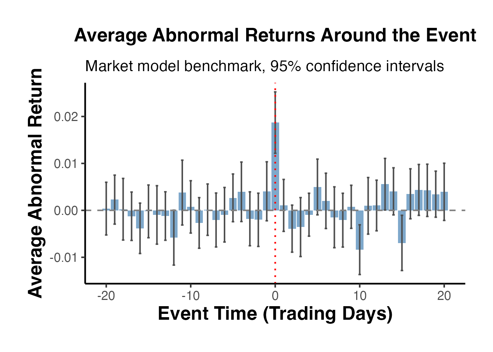
The plot should show a clear spike at (the event day), with smaller effects at (information leakage) and (post-announcement drift), consistent with our data generating process.
The CAR for firm over window is the sum of abnormal returns across event days within that window.
# Compute CAR for each firm over several windows
compute_car <- function(data, tau1, tau2) {
data %>%
filter(event_time >= tau1 & event_time <= tau2) %>%
group_by(firm_id) %>%
dplyr::summarise(
car = sum(ar),
window = paste0("(", tau1, ",", tau2, ")"),
.groups = "drop"
)
}
# Compute CARs for standard windows
car_1_1 <- compute_car(sim_data, -1, 1)
car_5_5 <- compute_car(sim_data, -5, 5)
car_10_10 <- compute_car(sim_data, -10, 10)
car_0_0 <- compute_car(sim_data, 0, 0)
# Combine all windows
all_cars <- bind_rows(car_1_1, car_5_5, car_10_10, car_0_0)
# Summary statistics by window
car_summary <- all_cars %>%
group_by(window) %>%
dplyr::summarise(
mean_car = mean(car),
median_car = median(car),
sd_car = sd(car),
n = n(),
t_stat = mean(car) / (sd(car) / sqrt(n())),
p_value = 2 * (1 - pt(abs(t_stat), df = n() - 1)),
.groups = "drop"
)
car_summary
#> # A tibble: 4 × 7
#> window mean_car median_car sd_car n t_stat p_value
#> <chr> <dbl> <dbl> <dbl> <int> <dbl> <dbl>
#> 1 (-1,1) 0.0238 0.0230 0.0404 50 4.17 0.000123
#> 2 (-10,10) 0.00925 0.0302 0.104 50 0.626 0.534
#> 3 (-5,5) 0.0232 0.0307 0.0797 50 2.06 0.0449
#> 4 (0,0) 0.0187 0.0181 0.0236 50 5.60 0.000000960We can also track how the cumulative abnormal return builds up over the event window by computing a running sum of the average AR.
# Compute cumulative average abnormal return (CAAR)
caar <- avg_ar %>%
arrange(event_time) %>%
mutate(
caar = cumsum(mean_ar),
caar_se = sqrt(cumsum(se_ar^2))
)
head(caar, 10)
#> # A tibble: 10 × 6
#> event_time mean_ar se_ar n_firms caar caar_se
#> <dbl> <dbl> <dbl> <int> <dbl> <dbl>
#> 1 -20 0.000370 0.00286 50 0.000370 0.00286
#> 2 -19 0.00229 0.00266 50 0.00266 0.00391
#> 3 -18 0.000238 0.00335 50 0.00289 0.00515
#> 4 -17 -0.00125 0.00263 50 0.00164 0.00578
#> 5 -16 -0.00383 0.00274 50 -0.00219 0.00640
#> 6 -15 -0.000216 0.00287 50 -0.00240 0.00701
#> 7 -14 -0.000973 0.00318 50 -0.00338 0.00769
#> 8 -13 -0.00121 0.00263 50 -0.00458 0.00813
#> 9 -12 -0.00581 0.00298 50 -0.0104 0.00866
#> 10 -11 0.00378 0.00352 50 -0.00661 0.00935
ggplot(caar, aes(x = event_time, y = caar)) +
geom_ribbon(aes(ymin = caar - 1.96 * caar_se,
ymax = caar + 1.96 * caar_se),
fill = "steelblue", alpha = 0.2) +
geom_line(color = "steelblue", linewidth = 1) +
geom_point(color = "steelblue", size = 1.5) +
geom_hline(yintercept = 0, linetype = "dashed", color = "grey50") +
geom_vline(xintercept = 0, linetype = "dotted", color = "red", linewidth = 0.8) +
labs(
title = "Cumulative Average Abnormal Return (CAAR)",
subtitle = "Market model benchmark, 95% confidence band",
x = "Event Time (Trading Days)",
y = "CAAR"
) +
causalverse::ama_theme()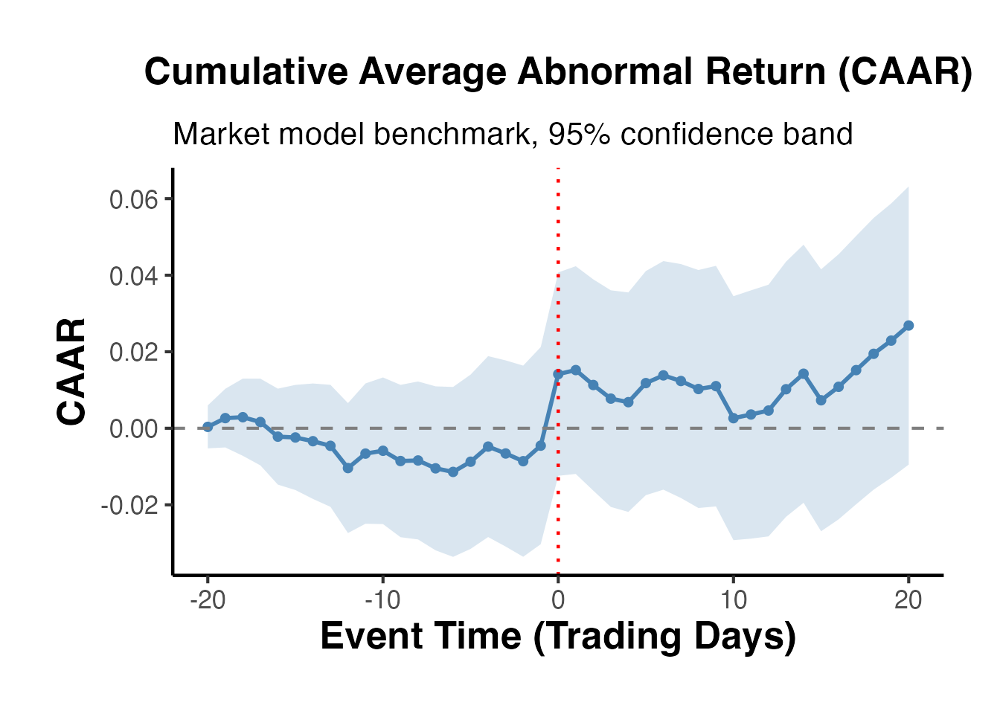
The CAAR plot is the classic output of a finance event study. We expect to see a relatively flat line before the event, a sharp jump at the event date, and a plateau afterward (if the market is efficient and there is no post-event drift).
ggplot(car_1_1, aes(x = car)) +
geom_histogram(bins = 20, fill = "steelblue", color = "white", alpha = 0.8) +
geom_vline(xintercept = mean(car_1_1$car),
linetype = "dashed", color = "red", linewidth = 0.8) +
labs(
title = "Distribution of CAR(-1, +1) Across Firms",
subtitle = paste("Mean CAR =", round(mean(car_1_1$car), 4)),
x = "CAR(-1, +1)",
y = "Count"
) +
causalverse::ama_theme()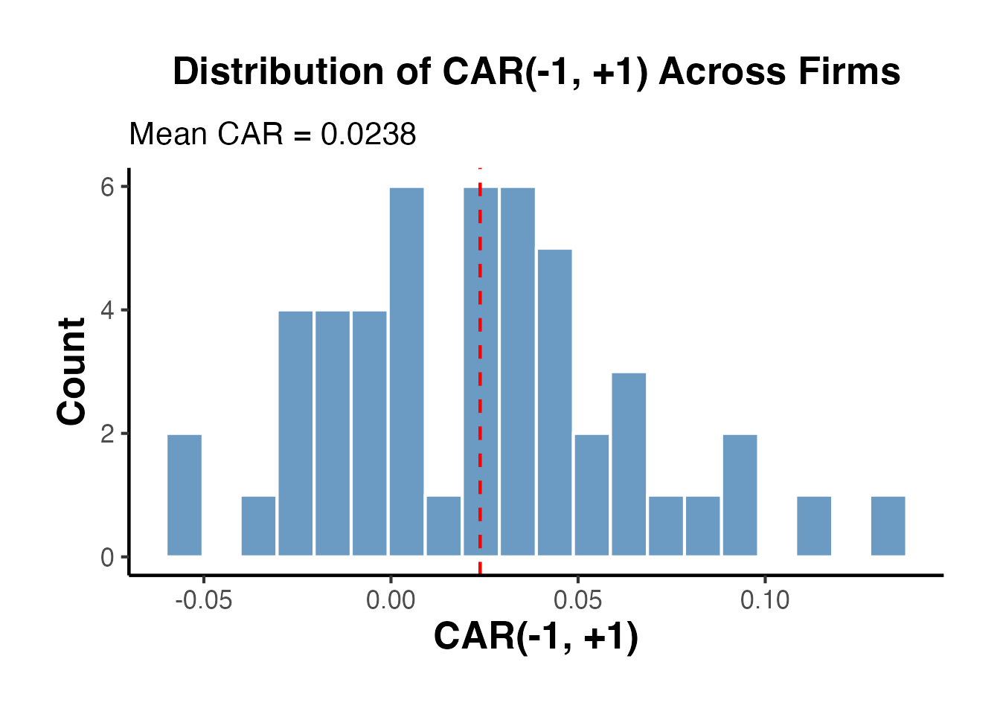
A central concern in event studies is whether the observed abnormal returns are statistically different from zero. Several parametric and non-parametric tests have been developed for this purpose.
The simplest test computes the t-statistic from the cross-section of CARs:
where is the cross-sectional standard deviation of CARs and is the number of events.
# Cross-sectional t-test on CAR(-1,+1)
car_values <- car_1_1$car
n <- length(car_values)
mean_car <- mean(car_values)
sd_car <- sd(car_values)
t_stat_cs <- mean_car / (sd_car / sqrt(n))
p_value_cs <- 2 * (1 - pt(abs(t_stat_cs), df = n - 1))
cat("Cross-Sectional t-Test for CAR(-1,+1)\n")
#> Cross-Sectional t-Test for CAR(-1,+1)
cat("--------------------------------------\n")
#> --------------------------------------
cat("Mean CAR: ", round(mean_car, 6), "\n")
#> Mean CAR: 0.02381
cat("Std Dev: ", round(sd_car, 6), "\n")
#> Std Dev: 0.040367
cat("N: ", n, "\n")
#> N: 50
cat("t-statistic:", round(t_stat_cs, 4), "\n")
#> t-statistic: 4.1708
cat("p-value: ", format.pval(p_value_cs, digits = 4), "\n")
#> p-value: 0.0001234The Patell (1976) test standardizes each firm’s abnormal return by its own estimation-period standard deviation before averaging. This accounts for differences in return volatility across firms:
where is the length of the estimation window and the adjustment factor corrects for forecast error.
# Compute standardized abnormal returns (simplified Patell approach)
est_sigmas <- model_params$sigma # estimation-window residual std dev
# For each firm, compute standardized CAR
standardized_cars <- sapply(1:n_firms, function(i) {
firm_ar <- sim_data %>%
filter(firm_id == i, event_time >= -1 & event_time <= 1) %>%
pull(ar)
# Sum of ARs over the window
car_i <- sum(firm_ar)
# Standard deviation under Patell (simplified: sigma * sqrt(L_event))
L_event <- length(firm_ar)
sd_car_i <- est_sigmas[i] * sqrt(L_event)
# Standardized CAR
car_i / sd_car_i
})
# Patell test statistic
t_patell <- mean(standardized_cars) * sqrt(n_firms)
p_patell <- 2 * (1 - pnorm(abs(t_patell)))
cat("Patell (1976) Standardized Test\n")
#> Patell (1976) Standardized Test
cat("-------------------------------\n")
#> -------------------------------
cat("Average SCAR:", round(mean(standardized_cars), 4), "\n")
#> Average SCAR: 0.6887
cat("Z-statistic: ", round(t_patell, 4), "\n")
#> Z-statistic: 4.8701
cat("p-value: ", format.pval(p_patell, digits = 4), "\n")
#> p-value: 1.115e-06The BMP test combines the Patell standardization with a cross-sectional variance estimate. This makes it robust to event-induced increases in variance, which is a common problem when events themselves affect stock return volatility:
# BMP test
mean_scar <- mean(standardized_cars)
sd_scar <- sd(standardized_cars)
t_bmp <- (mean_scar / sd_scar) * sqrt(n_firms)
p_bmp <- 2 * (1 - pnorm(abs(t_bmp)))
cat("BMP (1991) Test\n")
#> BMP (1991) Test
cat("---------------\n")
#> ---------------
cat("Mean SCAR: ", round(mean_scar, 4), "\n")
#> Mean SCAR: 0.6887
cat("SD of SCARs: ", round(sd_scar, 4), "\n")
#> SD of SCARs: 1.1796
cat("t-statistic: ", round(t_bmp, 4), "\n")
#> t-statistic: 4.1285
cat("p-value: ", format.pval(p_bmp, digits = 4), "\n")
#> p-value: 3.651e-05Non-parametric tests are valuable because they do not rely on the assumption that abnormal returns are normally distributed, which is often violated with daily stock return data.
The sign test examines whether the fraction of positive CARs exceeds 50%. Under the null hypothesis of no abnormal performance, the number of positive CARs follows a binomial distribution:
# Sign test
n_positive <- sum(car_values > 0)
n_total <- length(car_values)
# Under H0, p = 0.5
# Use exact binomial test
sign_test <- binom.test(n_positive, n_total, p = 0.5)
cat("Sign Test for CAR(-1,+1)\n")
#> Sign Test for CAR(-1,+1)
cat("------------------------\n")
#> ------------------------
cat("Positive CARs:", n_positive, "out of", n_total, "\n")
#> Positive CARs: 35 out of 50
cat("Proportion: ", round(n_positive / n_total, 4), "\n")
#> Proportion: 0.7
cat("p-value: ", format.pval(sign_test$p.value, digits = 4), "\n")
#> p-value: 0.0066The generalized sign test adjusts the expected proportion of positive abnormal returns using the estimation window, rather than assuming 50%. The expected proportion is computed as the average fraction of positive abnormal returns across firms during the estimation window:
# Compute the expected proportion of positive ARs from the estimation window
est_positive_fractions <- sapply(1:n_firms, function(i) {
firm_est <- sim_data %>%
filter(firm_id == i, day >= est_start & day <= est_end)
mean(firm_est$ar > 0)
})
p_hat <- mean(est_positive_fractions)
# Generalized sign test statistic
z_gsign <- (n_positive - n_total * p_hat) / sqrt(n_total * p_hat * (1 - p_hat))
p_gsign <- 2 * (1 - pnorm(abs(z_gsign)))
cat("Generalized Sign Test\n")
#> Generalized Sign Test
cat("---------------------\n")
#> ---------------------
cat("Expected p(AR > 0) from est. window:", round(p_hat, 4), "\n")
#> Expected p(AR > 0) from est. window: 0.5002
cat("Observed positive CARs:", n_positive, "\n")
#> Observed positive CARs: 35
cat("Z-statistic:", round(z_gsign, 4), "\n")
#> Z-statistic: 2.8251
cat("p-value: ", format.pval(p_gsign, digits = 4), "\n")
#> p-value: 0.004727The Corrado rank test transforms abnormal returns into ranks within each firm’s full time series. The test statistic is based on the deviation of the average rank on the event day from its expected value under the null:
# Corrado rank test
# For each firm, rank the abnormal returns across all days
rank_data <- sim_data %>%
group_by(firm_id) %>%
mutate(
ar_rank = rank(ar),
n_days_firm = n(),
centered_rank = (ar_rank - (n_days_firm + 1) / 2)
) %>%
ungroup()
# Compute the average centered rank on the event day (event_time == 0)
event_day_ranks <- rank_data %>%
filter(event_time == 0)
avg_rank <- mean(event_day_ranks$centered_rank)
# Standard deviation of average ranks (computed from all days in the sample)
rank_sd <- rank_data %>%
group_by(day) %>%
dplyr::summarise(daily_avg_rank = mean(centered_rank), .groups = "drop") %>%
pull(daily_avg_rank) %>%
sd()
t_corrado <- avg_rank / rank_sd
p_corrado <- 2 * (1 - pnorm(abs(t_corrado)))
cat("Corrado (1989) Rank Test\n")
#> Corrado (1989) Rank Test
cat("------------------------\n")
#> ------------------------
cat("Average centered rank on event day:", round(avg_rank, 4), "\n")
#> Average centered rank on event day: 64.42
cat("Rank std deviation:", round(rank_sd, 4), "\n")
#> Rank std deviation: 13.4108
cat("t-statistic:", round(t_corrado, 4), "\n")
#> t-statistic: 4.8036
cat("p-value: ", format.pval(p_corrado, digits = 4), "\n")
#> p-value: 1.558e-06
test_results <- data.frame(
Test = c("Cross-sectional t-test",
"Patell (1976)",
"BMP (1991)",
"Sign test",
"Generalized sign test",
"Corrado rank test"),
Statistic = c(round(t_stat_cs, 4),
round(t_patell, 4),
round(t_bmp, 4),
paste0(n_positive, "/", n_total),
round(z_gsign, 4),
round(t_corrado, 4)),
P_value = c(format.pval(p_value_cs, digits = 4),
format.pval(p_patell, digits = 4),
format.pval(p_bmp, digits = 4),
format.pval(sign_test$p.value, digits = 4),
format.pval(p_gsign, digits = 4),
format.pval(p_corrado, digits = 4)),
stringsAsFactors = FALSE
)
test_results
#> Test Statistic P_value
#> 1 Cross-sectional t-test 4.1708 0.0001234
#> 2 Patell (1976) 4.8701 1.115e-06
#> 3 BMP (1991) 4.1285 3.651e-05
#> 4 Sign test 35/50 0.0066
#> 5 Generalized sign test 2.8251 0.004727
#> 6 Corrado rank test 4.8036 1.558e-06For long-horizon event studies (e.g., measuring performance over 1-3 years following an IPO, SEO, or merger), cumulative abnormal returns can be misleading because they implicitly assume daily portfolio rebalancing. The buy-and-hold abnormal return compounds returns as an investor who buys on the event date and holds through the measurement horizon would actually experience.
# Compute BHAR for each firm over the post-event period [0, +30]
bhar_data <- sim_data %>%
filter(event_time >= 0 & event_time <= 30) %>%
group_by(firm_id) %>%
arrange(event_time) %>%
mutate(
cum_ret = cumprod(1 + ret) - 1,
cum_mkt_ret = cumprod(1 + market_ret) - 1
) %>%
ungroup()
# BHAR for each firm at the end of the window
bhar_final <- bhar_data %>%
filter(event_time == 30) %>%
mutate(bhar = cum_ret - cum_mkt_ret)
cat("BHAR(0, +30) Summary\n")
#> BHAR(0, +30) Summary
cat("--------------------\n")
#> --------------------
cat("Mean BHAR: ", round(mean(bhar_final$bhar), 6), "\n")
#> Mean BHAR: 0.044272
cat("Median BHAR:", round(median(bhar_final$bhar), 6), "\n")
#> Median BHAR: 0.038424
cat("Std Dev: ", round(sd(bhar_final$bhar), 6), "\n")
#> Std Dev: 0.120726
# t-test on BHAR
t_bhar <- t.test(bhar_final$bhar, mu = 0)
cat("t-statistic:", round(t_bhar$statistic, 4), "\n")
#> t-statistic: 2.5931
cat("p-value: ", format.pval(t_bhar$p.value, digits = 4), "\n")
#> p-value: 0.01251
# Average BHAR over time
avg_bhar <- bhar_data %>%
group_by(event_time) %>%
dplyr::summarise(
mean_bhar = mean(cum_ret - cum_mkt_ret),
se_bhar = sd(cum_ret - cum_mkt_ret) / sqrt(n()),
.groups = "drop"
)
ggplot(avg_bhar, aes(x = event_time, y = mean_bhar)) +
geom_ribbon(aes(ymin = mean_bhar - 1.96 * se_bhar,
ymax = mean_bhar + 1.96 * se_bhar),
fill = "darkorange", alpha = 0.2) +
geom_line(color = "darkorange", linewidth = 1) +
geom_hline(yintercept = 0, linetype = "dashed", color = "grey50") +
labs(
title = "Average BHAR Over Post-Event Window",
subtitle = "Market-adjusted, 95% confidence band",
x = "Event Time (Trading Days)",
y = "Average BHAR"
) +
causalverse::ama_theme()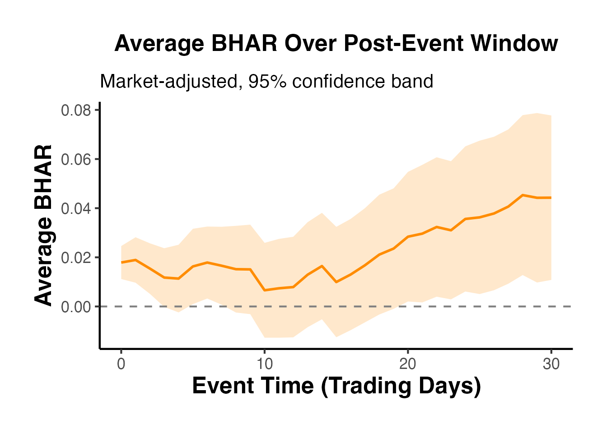
An alternative to BHAR for long-horizon studies is the calendar-time portfolio approach (also called the calendar-time abnormal return, CTAR). Rather than aligning returns in event time, this method forms a portfolio each calendar month that includes all firms that have experienced an event within the prior months. The portfolio return is then regressed on factor models:
The intercept (Jensen’s alpha) measures average monthly abnormal performance. The advantage of CTAR is that it accounts for cross-sectional dependence among event firms (because overlapping event windows are aggregated into a single portfolio return), whereas BHAR tests can overstate statistical significance when events cluster in calendar time.
We illustrate the concept with our simulated data by forming daily portfolios:
# Calendar-time portfolio: for each calendar day, compute the
# equal-weighted return of all firms in their post-event window [0, +20]
ctar_data <- sim_data %>%
filter(event_time >= 0 & event_time <= 20)
# Equal-weighted portfolio return each day
ctar_portfolio <- ctar_data %>%
group_by(day) %>%
dplyr::summarise(
port_ret = mean(ret),
port_mkt = mean(market_ret),
n_firms = n(),
.groups = "drop"
)
# Regress portfolio excess returns on market returns
ctar_model <- lm(port_ret ~ port_mkt, data = ctar_portfolio)
cat("Calendar-Time Portfolio Regression\n")
#> Calendar-Time Portfolio Regression
cat("-----------------------------------\n")
#> -----------------------------------
cat("Alpha (intercept):", round(coef(ctar_model)[1], 6), "\n")
#> Alpha (intercept): 0.000883
cat("t-stat on alpha: ", round(summary(ctar_model)$coefficients[1, 3], 4), "\n")
#> t-stat on alpha: 0.8787
cat("Beta: ", round(coef(ctar_model)[2], 4), "\n")
#> Beta: 0.679
cat("R-squared: ", round(summary(ctar_model)$r.squared, 4), "\n")
#> R-squared: 0.6678In practice, researchers use the Fama-French factor data available from Kenneth French’s data library. The three-factor and four-factor models provide more precise benchmarks for expected returns than the simple market model.
The Fama-French (1993) three-factor model accounts for the well-documented size and value premiums:
# Download Fama-French 3-factor data using the frenchdata package
library(frenchdata)
ff3_raw <- download_french_data("Fama/French 3 Factors (Daily)")
ff3 <- ff3_raw$subsets$data[[1]]
# Clean up: convert date, scale factors from percent to decimal
ff3 <- ff3 %>%
mutate(
date = as.Date(as.character(date), format = "%Y%m%d"),
mkt_rf = `Mkt-RF` / 100,
smb = SMB / 100,
hml = HML / 100,
rf = RF / 100
) %>%
dplyr::select(date, mkt_rf, smb, hml, rf) %>%
filter(!is.na(date))
# --- Simulate stock return data to merge with the factor data ---
set.seed(123)
n_days_ff <- min(500, nrow(ff3))
ff3_subset <- tail(ff3, n_days_ff)
event_day_ff <- round(n_days_ff * 0.7)
stock_data <- data.frame(
date = ff3_subset$date,
ret = 0.0003 + 1.1 * ff3_subset$mkt_rf +
0.3 * ff3_subset$smb - 0.2 * ff3_subset$hml +
rnorm(n_days_ff, 0, 0.01),
event_time = seq_len(n_days_ff) - event_day_ff,
stringsAsFactors = FALSE
)
# Inject an event effect
stock_data$ret[stock_data$event_time == 0] <-
stock_data$ret[stock_data$event_time == 0] + 0.02
# Merge factor data with stock returns
merged_data <- merge(stock_data, ff3_subset, by = "date")
merged_data$excess_ret <- merged_data$ret - merged_data$rf
# Estimation window regression (event_time < -20)
ff3_model <- lm(
excess_ret ~ mkt_rf + smb + hml,
data = merged_data[merged_data$event_time < -20, ]
)
# Abnormal return in event window
merged_data$ar_ff3 <- merged_data$excess_ret -
predict(ff3_model, newdata = merged_data)
# Show event-window abnormal returns
merged_data %>%
filter(event_time >= -5 & event_time <= 5) %>%
dplyr::select(date, event_time, ret, excess_ret, ar_ff3) %>%
print()
summary(ff3_model)The Carhart (1997) model adds a momentum factor, which captures the tendency of past winners to continue outperforming and past losers to continue underperforming:
# Download Carhart / momentum factor data
library(frenchdata)
mom_raw <- download_french_data("F-F Momentum Factor (daily)")
mom <- mom_raw$subsets$data[[1]]
mom <- mom %>%
mutate(
date = as.Date(as.character(date), format = "%Y%m%d"),
umd = Mom / 100
) %>%
dplyr::select(date, umd) %>%
filter(!is.na(date))
# Merge momentum factor into merged_data created in the FF3 chunk
merged_data <- merge(merged_data, mom, by = "date", all.x = TRUE)
merged_data <- merged_data[!is.na(merged_data$umd), ]
# Carhart 4-factor estimation window regression
ff4_model <- lm(
excess_ret ~ mkt_rf + smb + hml + umd,
data = merged_data[merged_data$event_time < -20, ]
)
# Abnormal return
merged_data$ar_ff4 <- merged_data$excess_ret -
predict(ff4_model, newdata = merged_data)
# The four-factor model is especially important for long-horizon studies
# where momentum effects can confound abnormal return estimates.
# Show event-window abnormal returns
merged_data %>%
filter(event_time >= -5 & event_time <= 5) %>%
dplyr::select(date, event_time, ar_ff3, ar_ff4) %>%
print()
summary(ff4_model)The choice of normal return model depends on the research context:
EventStudy Package
The EventStudy R package provides a comprehensive implementation of event study methodology, including multiple return models and statistical tests.
library(EventStudy)
# The EventStudy package requires three input files:
# 1. Request file: specifying parameters
# 2. Firm data: stock returns indexed by date
# 3. Market data: market/factor returns indexed by date
# Example setup:
# est_setup <- EventStudyAPI$new()
# est_setup$authentication(apiKey = "your_api_key")
# --- Prepare simulated data in the format EventStudy expects ---
# Create date sequence for our simulated data
sim_dates <- seq.Date(as.Date("2022-01-03"), by = "day", length.out = n_days)
sim_dates <- sim_dates[!weekdays(sim_dates) %in% c("Saturday", "Sunday")]
sim_dates <- sim_dates[seq_len(n_days)]
# Firm returns: columns = date + one column per firm
firm_returns_wide <- sim_data %>%
filter(firm_id <= 5) %>%
mutate(date = sim_dates[day]) %>%
dplyr::select(date, firm_id, ret) %>%
tidyr::pivot_wider(names_from = firm_id, values_from = ret,
names_prefix = "firm_")
# Market returns
market_returns_df <- data.frame(
date = sim_dates,
market_ret = market_ret
)
# Event list: firm name, event date, group
event_list_df <- data.frame(
firm = paste0("firm_", 1:5),
date = sim_dates[event_day],
group = "group1",
stringsAsFactors = FALSE
)
cat("Firm returns (first 5 rows):\n")
print(head(firm_returns_wide, 5))
cat("\nEvent list:\n")
print(event_list_df)
# Note: Full EventStudy::EventStudy() usage depends on API key or
# specific local computation functions available in the package version.
# Consult the EventStudy package documentation for the exact syntax.EventStudy
The package supports several return models:
model = "market_model"
model = "market_adjusted"
model = "mean_adjusted"
model = "ff3"
model = "ff4"
EventStudy
The package implements a comprehensive set of parametric and non-parametric tests:
# Demonstrate the types of results the EventStudy package provides.
# Since the API-based workflow requires authentication, we illustrate
# using our previously computed results from the simulated data.
# Access test results (from our manual pipeline above)
cat("=== Test Results (from manual pipeline) ===\n")
print(test_results)
cat("\n=== CAR Summary by Window ===\n")
print(car_summary)
# Cross-sectional regression on CARs
# (Using our simulated firm characteristics as stand-in for analyst coverage, etc.)
cross_section <- lm(
car ~ log_mcap + leverage + roa,
data = car_cross
)
summary(cross_section)A natural follow-up question in event studies is: why do some firms experience larger abnormal returns than others? Cross-sectional analysis regresses individual firm CARs on firm characteristics to identify determinants of the market’s reaction.
Common explanatory variables include:
# Merge CARs with firm characteristics
car_cross <- car_1_1 %>%
left_join(firm_chars, by = "firm_id")
# OLS regression of CAR on firm characteristics
cs_model_ols <- lm(car ~ log_mcap + leverage + roa, data = car_cross)
summary(cs_model_ols)
#>
#> Call:
#> lm(formula = car ~ log_mcap + leverage + roa, data = car_cross)
#>
#> Residuals:
#> Min 1Q Median 3Q Max
#> -0.088473 -0.018639 -0.004599 0.010909 0.084254
#>
#> Coefficients:
#> Estimate Std. Error t value Pr(>|t|)
#> (Intercept) -0.012930 0.033578 -0.385 0.70196
#> log_mcap 0.002235 0.003399 0.658 0.51413
#> leverage -0.018561 0.030052 -0.618 0.53985
#> roa 0.497158 0.165387 3.006 0.00428 **
#> ---
#> Signif. codes: 0 '***' 0.001 '**' 0.01 '*' 0.05 '.' 0.1 ' ' 1
#>
#> Residual standard error: 0.03802 on 46 degrees of freedom
#> Multiple R-squared: 0.1671, Adjusted R-squared: 0.1127
#> F-statistic: 3.075 on 3 and 46 DF, p-value: 0.03678fixest::feols()
For robust standard errors and more flexible specifications, fixest::feols() is preferred:
# Cross-sectional regression with heteroskedasticity-robust SEs
cs_model_fixest <- feols(
car ~ log_mcap + leverage + roa,
data = car_cross,
vcov = "hetero"
)
summary(cs_model_fixest)
#> OLS estimation, Dep. Var.: car
#> Observations: 50
#> Standard-errors: Heteroskedasticity-robust
#> Estimate Std. Error t value Pr(>|t|)
#> (Intercept) -0.012930 0.031410 -0.411647 0.6825100
#> log_mcap 0.002235 0.003008 0.742893 0.4613234
#> leverage -0.018561 0.030078 -0.617118 0.5401998
#> roa 0.497158 0.163787 3.035394 0.0039455 **
#> ---
#> Signif. codes: 0 '***' 0.001 '**' 0.01 '*' 0.05 '.' 0.1 ' ' 1
#> RMSE: 0.036471 Adj. R2: 0.112733
# Visualize the relationship between firm size and CAR
ggplot(car_cross, aes(x = log_mcap, y = car)) +
geom_point(alpha = 0.6, color = "steelblue", size = 2) +
geom_smooth(method = "lm", se = TRUE, color = "red",
fill = "red", alpha = 0.15) +
geom_hline(yintercept = 0, linetype = "dashed", color = "grey50") +
labs(
title = "CAR(-1,+1) vs. Firm Size",
x = "Log Market Capitalization",
y = "CAR(-1, +1)"
) +
causalverse::ama_theme()
#> `geom_smooth()` using formula = 'y ~ x'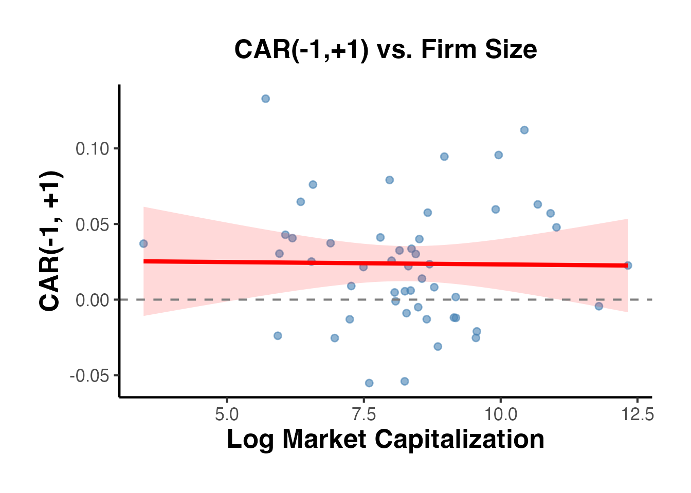
# Visualize the relationship between leverage and CAR
ggplot(car_cross, aes(x = leverage, y = car)) +
geom_point(alpha = 0.6, color = "darkorange", size = 2) +
geom_smooth(method = "lm", se = TRUE, color = "red",
fill = "red", alpha = 0.15) +
geom_hline(yintercept = 0, linetype = "dashed", color = "grey50") +
labs(
title = "CAR(-1,+1) vs. Leverage",
x = "Leverage (Debt/Assets)",
y = "CAR(-1, +1)"
) +
causalverse::ama_theme()
#> `geom_smooth()` using formula = 'y ~ x'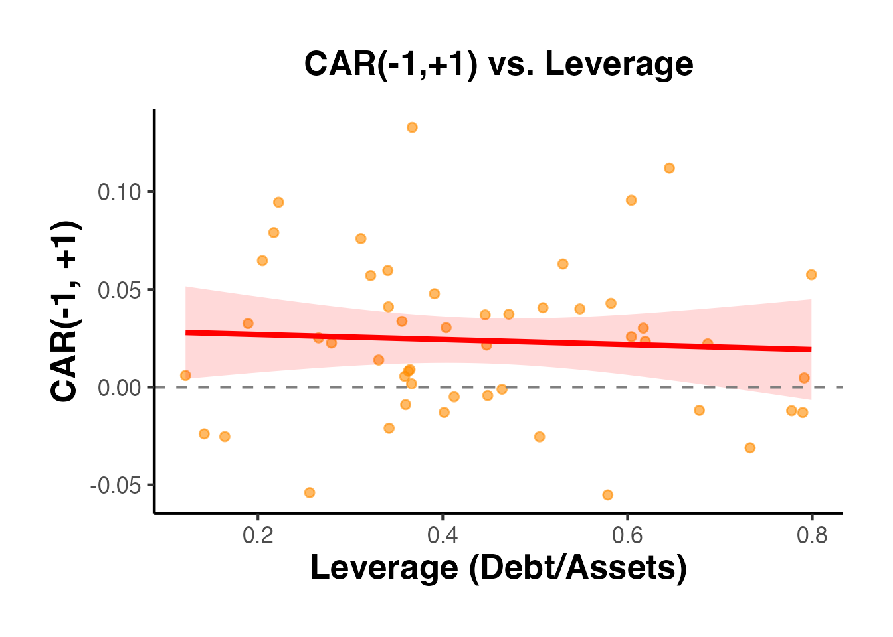
Researchers sometimes run cross-sectional regressions for multiple event windows to check robustness:
# Run cross-sectional regression for each window
windows <- list(
list(tau1 = 0, tau2 = 0, label = "(0,0)"),
list(tau1 = -1, tau2 = 1, label = "(-1,+1)"),
list(tau1 = -5, tau2 = 5, label = "(-5,+5)"),
list(tau1 = -10, tau2 = 10, label = "(-10,+10)")
)
multi_window_results <- lapply(windows, function(w) {
cars <- compute_car(sim_data, w$tau1, w$tau2)
cars <- merge(cars, firm_chars, by = "firm_id")
model <- feols(car ~ log_mcap + leverage + roa, data = cars, vcov = "hetero")
data.frame(
window = w$label,
intercept = round(coef(model)[1], 6),
log_mcap = round(coef(model)[2], 6),
leverage = round(coef(model)[3], 6),
roa = round(coef(model)[4], 6),
n = nobs(model),
r_sq = round(r2(model)["r2"], 4),
stringsAsFactors = FALSE
)
})
do.call(rbind, multi_window_results)
#> window intercept log_mcap leverage roa n r_sq
#> (Intercept) (0,0) -0.007853 0.002493 -0.024962 0.318235 50 0.2256
#> (Intercept)1 (-1,+1) -0.012930 0.002235 -0.018561 0.497158 50 0.1671
#> (Intercept)2 (-5,+5) -0.100341 0.011700 -0.033798 0.781031 50 0.1319
#> (Intercept)3 (-10,+10) -0.089638 0.012260 -0.071900 0.546124 50 0.0632estudy2 Package: C++ Optimized Event Study Tests
The estudy2 package provides a high-performance, C++-optimized implementation of both parametric and nonparametric event study tests. It is particularly useful when you need to apply a comprehensive battery of statistical tests to your event study results, as it bundles 12 well-known test statistics into a single function call.
Parametric tests (6 total):
Nonparametric tests (6 total):
estudy()
library(estudy2)
set.seed(42)
# Simulate returns for 30 firms over 300 trading days
n_firms <- 30
n_days <- 300
dates <- seq.Date(as.Date("2023-01-02"), by = "day", length.out = n_days)
# Market returns
market_ret <- rnorm(n_days, mean = 0.0004, sd = 0.012)
# Individual firm returns: market model + firm-specific noise
firm_returns <- lapply(1:n_firms, function(i) {
beta_i <- runif(1, 0.7, 1.4)
alpha_i <- rnorm(1, 0, 0.0002)
eps_i <- rnorm(n_days, 0, 0.015)
ret <- alpha_i + beta_i * market_ret + eps_i
# Inject an event effect on day 250 for all firms
ret[250] <- ret[250] + rnorm(1, 0.02, 0.005)
zoo::zoo(ret, order.by = dates)
})
market_zoo <- zoo::zoo(market_ret, order.by = dates)
# Run the full battery of event study tests
# event_start / event_end define the event window (relative to the list index)
result <- estudy2::estudy(
list_of_returns = firm_returns,
market_return = market_zoo,
event_start = -2,
event_end = 2
)
# Display parametric test results
cat("=== Parametric Test Results ===\n")
print(head(result$parametric))Nonparametric tests are especially valuable when abnormal returns are non-normal (e.g., skewed or heavy-tailed), which is common in daily stock return data. The Corrado rank test and the generalized rank (GRANK) test are often recommended as robust alternatives to parametric tests in applied work.
Short-window event studies (1–5 days) are the gold standard for measuring the market’s immediate reaction to an event. However, many research questions require examining long-horizon abnormal performance over months or years – for example, post-merger integration effects, post-IPO performance, or the long-run consequences of regulatory changes.
The calendar-time portfolio regression (CTPR) method (Jaffe, 1974; Mitchell and Stafford, 2000) forms a portfolio each calendar month consisting of all firms that experienced the event within a specified prior window (e.g., the past 12 months). The portfolio’s excess returns are then regressed on factor models (CAPM, Fama-French three-factor, etc.), and the intercept (alpha) measures the average monthly abnormal return.
set.seed(42)
# Simulate monthly returns for 50 firms over 60 months
n_firms <- 50
n_months <- 60
months <- seq.Date(as.Date("2019-01-01"), by = "month", length.out = n_months)
# Factor returns
mkt_rf <- rnorm(n_months, 0.006, 0.045)
smb <- rnorm(n_months, 0.002, 0.030)
hml <- rnorm(n_months, 0.003, 0.028)
rf <- rep(0.002 / 12, n_months)
# Each firm has a random event month between months 13 and 36
event_months <- sample(13:36, n_firms, replace = TRUE)
# Simulate firm returns: 3-factor model + post-event alpha
firm_data <- do.call(rbind, lapply(1:n_firms, function(i) {
beta_m <- runif(1, 0.8, 1.3)
beta_s <- runif(1, -0.3, 0.5)
beta_h <- runif(1, -0.4, 0.4)
eps <- rnorm(n_months, 0, 0.04)
ret <- rf + beta_m * mkt_rf + beta_s * smb + beta_h * hml + eps
# Add negative post-event drift of -0.5% per month
post_event <- (1:n_months) > event_months[i] &
(1:n_months) <= (event_months[i] + 12)
ret[post_event] <- ret[post_event] - 0.005
data.frame(
firm = i,
month = months,
ret = ret,
in_portfolio = as.integer(
(1:n_months) > event_months[i] &
(1:n_months) <= (event_months[i] + 12)
)
)
}))
# Form calendar-time portfolio: equal-weighted average of event firms each month
ctpr_data <- firm_data |>
dplyr::filter(in_portfolio == 1) |>
dplyr::group_by(month) |>
dplyr::summarise(port_ret = mean(ret), n_firms = dplyr::n(), .groups = "drop")
# Merge with factor data
ctpr_data$mkt_rf <- mkt_rf[match(ctpr_data$month, months)]
ctpr_data$smb <- smb[match(ctpr_data$month, months)]
ctpr_data$hml <- hml[match(ctpr_data$month, months)]
ctpr_data$rf <- rf[match(ctpr_data$month, months)]
ctpr_data$excess <- ctpr_data$port_ret - ctpr_data$rf
# Regress on Fama-French three factors
ctpr_model <- lm(excess ~ mkt_rf + smb + hml, data = ctpr_data)
summary(ctpr_model)
#>
#> Call:
#> lm(formula = excess ~ mkt_rf + smb + hml, data = ctpr_data)
#>
#> Residuals:
#> Min 1Q Median 3Q Max
#> -0.020285 -0.007660 -0.002236 0.008259 0.039837
#>
#> Coefficients:
#> Estimate Std. Error t value Pr(>|t|)
#> (Intercept) 5.844e-05 2.175e-03 0.027 0.979
#> mkt_rf 1.040e+00 4.298e-02 24.208 <2e-16 ***
#> smb -6.747e-02 7.990e-02 -0.844 0.405
#> hml 9.715e-02 9.414e-02 1.032 0.310
#> ---
#> Signif. codes: 0 '***' 0.001 '**' 0.01 '*' 0.05 '.' 0.1 ' ' 1
#>
#> Residual standard error: 0.01264 on 31 degrees of freedom
#> Multiple R-squared: 0.9515, Adjusted R-squared: 0.9468
#> F-statistic: 202.9 on 3 and 31 DF, p-value: < 2.2e-16The intercept (alpha) from this regression captures the average monthly abnormal return for event firms. A negative and significant alpha suggests post-event underperformance.
For horizons of 12–36 months, the buy-and-hold abnormal return (BHAR) compounds returns and compares them against a benchmark:
set.seed(42)
# Simulate 36-month post-event returns for 40 firms
n_firms <- 40
horizon <- 36
benchmark <- rnorm(horizon, 0.008, 0.04) # monthly benchmark returns
bhars <- sapply(1:n_firms, function(i) {
firm_ret <- benchmark + rnorm(horizon, -0.003, 0.03) # slight underperformance
prod(1 + firm_ret) - prod(1 + benchmark)
})
bhar_df <- data.frame(firm = 1:n_firms, BHAR = bhars)
ggplot(bhar_df, aes(x = BHAR)) +
geom_histogram(bins = 15, fill = "steelblue", color = "white", alpha = 0.8) +
geom_vline(xintercept = mean(bhars), color = "red", linewidth = 1, linetype = "dashed") +
labs(
title = "Distribution of 36-Month Buy-and-Hold Abnormal Returns",
subtitle = paste0("Mean BHAR = ", round(mean(bhars), 4),
" | t = ", round(mean(bhars) / (sd(bhars) / sqrt(n_firms)), 2)),
x = "BHAR", y = "Count"
) +
causalverse::ama_theme()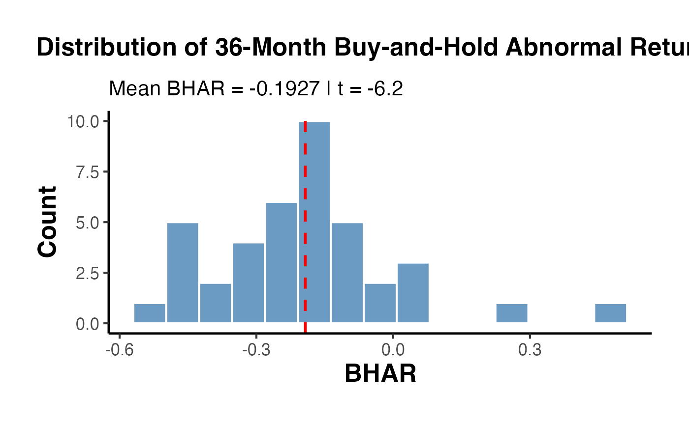
crseEventStudy
The crseEventStudy package implements the crude dependence adjustment of Kolari, Pynnonen, and others for event studies where event dates cluster in calendar time.
library(crseEventStudy)
set.seed(42)
# The package provides functions for adjusted t-statistics
# when events cluster on the same or nearby calendar dates.
# Simulate abnormal returns with clustering
n_events <- 60
ar <- rnorm(n_events, mean = 0.01, sd = 0.03)
# Estimation-period variance for each event
var_est <- runif(n_events, 0.0005, 0.003)
# Standardized abnormal returns
sar <- ar / sqrt(var_est)
cat("Mean AR: ", round(mean(ar), 4), "\n")
cat("Mean SAR: ", round(mean(sar), 2), "\n")
cat("Crude t (unadjusted): ", round(mean(ar) / (sd(ar) / sqrt(n_events)), 3), "\n")Long-horizon event studies require careful attention to the bad model problem (Fama, 1998): small misspecifications in expected returns compound over long horizons and can produce spurious abnormal returns. The calendar-time approach is generally preferred because its test statistics are better specified in random samples.
A fundamental challenge in event studies is that the event itself may alter the variance of returns. Standard tests assume that the variance of abnormal returns during the event window equals the estimation-window variance, but events like earnings announcements or M&A deals often cause volatility spikes. Additionally, when multiple firms share the same event date (e.g., regulatory changes), their abnormal returns are cross-sectionally correlated, violating the independence assumption.
Boehmer et al. (1991) proposed the BMP test using standardized cross-sectional abnormal returns to account for event-induced variance. Kolari and Pynnonen (2010) extended this by adjusting for the average cross-sectional correlation () of abnormal returns:
where is the number of event firms and is the average pairwise correlation of estimation-window residuals.
set.seed(42)
# Simulate event study with event-induced variance and clustering
n_firms <- 40
n_est_days <- 200
n_event_days <- 5 # event window [-2, +2]
# Estimation-period residuals (used to estimate cross-correlation)
est_residuals <- matrix(rnorm(n_firms * n_est_days, 0, 0.015),
nrow = n_est_days, ncol = n_firms)
# Add some cross-sectional correlation (common factor)
common_factor <- rnorm(n_est_days, 0, 0.005)
est_residuals <- est_residuals + common_factor
# Event-window abnormal returns with HIGHER variance (event-induced variance)
event_ar <- matrix(rnorm(n_firms * n_event_days, 0.005, 0.03),
nrow = n_event_days, ncol = n_firms)
# Compute estimation-period standard deviations
sigma_est <- apply(est_residuals, 2, sd)
# Standardized abnormal returns (SAR)
sar_event <- sweep(event_ar, 2, sigma_est, "/")
# BMP test statistic (for event day 0, which is row 3)
sar_day0 <- sar_event[3, ]
t_bmp <- mean(sar_day0) / (sd(sar_day0) / sqrt(n_firms))
# Average cross-sectional correlation of estimation-period residuals
cor_matrix <- cor(est_residuals)
r_bar <- (sum(cor_matrix) - n_firms) / (n_firms * (n_firms - 1))
# Kolari-Pynnonen adjustment
t_adj <- t_bmp * sqrt(1 / (1 + (n_firms - 1) * r_bar))
cat("BMP t-statistic: ", round(t_bmp, 3), "\n")
#> BMP t-statistic: -0.033
cat("Average cross-correlation: ", round(r_bar, 4), "\n")
#> Average cross-correlation: 0.1124
cat("Kolari-Pynnonen adjusted t: ", round(t_adj, 3), "\n")
#> Kolari-Pynnonen adjusted t: -0.014
cat("Adjustment factor: ", round(sqrt(1 / (1 + (n_firms - 1) * r_bar)), 3), "\n")
#> Adjustment factor: 0.431When events cluster on the same calendar date (e.g., an industry-wide regulation), simple cross-sectional averaging overstates precision because the abnormal returns are not independent draws. Two practical approaches:
set.seed(42)
# Simulate: 50 events, 30 of which share the same date (clustered)
n_events <- 50
n_clustered <- 30
ar_all <- rnorm(n_events, mean = 0.008, sd = 0.025)
# Naive t-test (ignores clustering)
t_naive <- mean(ar_all) / (sd(ar_all) / sqrt(n_events))
# Portfolio approach: average the 30 clustered events into one observation
ar_portfolio <- c(mean(ar_all[1:n_clustered]), ar_all[(n_clustered + 1):n_events])
n_effective <- length(ar_portfolio)
t_portfolio <- mean(ar_portfolio) / (sd(ar_portfolio) / sqrt(n_effective))
results_cluster <- data.frame(
Method = c("Naive (N=50)", "Portfolio-adjusted (N_eff=21)"),
Mean_AR = round(c(mean(ar_all), mean(ar_portfolio)), 4),
t_stat = round(c(t_naive, t_portfolio), 3),
stringsAsFactors = FALSE
)
knitr::kable(results_cluster, caption = "Impact of Clustering Adjustment on Test Statistics")| Method | Mean_AR | t_stat |
|---|---|---|
| Naive (N=50) | 0.0071 | 1.746 |
| Portfolio-adjusted (N_eff=21) | 0.0035 | 0.668 |
The portfolio approach reduces the effective sample size from 50 to 21 (30 clustered events become 1 portfolio + 20 independent events), producing a more conservative and correctly sized test.
While CARs measure percentage abnormal returns, practitioners and policymakers often want to know the dollar value of wealth created or destroyed by an event. Converting CARs to dollar abnormal returns requires weighting by firm market capitalization.
The dollar abnormal return for firm over the event window is:
where is the market capitalization on the day before the event window begins.
set.seed(42)
# Simulate 25 firms with CARs and market capitalizations
n_firms <- 25
firms <- data.frame(
firm = paste0("Firm_", sprintf("%02d", 1:n_firms)),
CAR = rnorm(n_firms, mean = 0.015, sd = 0.03),
mcap_mm = exp(rnorm(n_firms, log(5000), 1.2)) # market cap in $millions
)
# Dollar abnormal returns
firms$DAR_mm <- firms$CAR * firms$mcap_mm
# Market-cap weighted CAR
firms$weight <- firms$mcap_mm / sum(firms$mcap_mm)
wt_car <- sum(firms$weight * firms$CAR)
cat("Equal-weighted mean CAR: ", round(mean(firms$CAR) * 100, 2), "%\n")
#> Equal-weighted mean CAR: 2.06 %
cat("Market-cap weighted CAR: ", round(wt_car * 100, 2), "%\n")
#> Market-cap weighted CAR: 1.69 %
cat("Total wealth effect: $", round(sum(firms$DAR_mm), 1), "M\n")
#> Total wealth effect: $ 2624.3 M
cat("Median dollar abn. return: $", round(median(firms$DAR_mm), 1), "M\n")
#> Median dollar abn. return: $ 62.9 M
# Visualize dollar abnormal returns by firm size
firms <- firms[order(firms$mcap_mm), ]
firms$firm <- factor(firms$firm, levels = firms$firm)
ggplot(firms, aes(x = log10(mcap_mm), y = DAR_mm)) +
geom_point(aes(size = mcap_mm), alpha = 0.6, color = "steelblue") +
geom_hline(yintercept = 0, linetype = "dashed", color = "grey40") +
geom_smooth(method = "lm", se = TRUE, color = "firebrick", linewidth = 0.8) +
scale_size_continuous(name = "Market Cap ($M)", labels = scales::comma) +
labs(
title = "Dollar Abnormal Returns vs. Firm Size",
subtitle = paste0("Total wealth effect: $",
round(sum(firms$DAR_mm), 0), "M across ",
n_firms, " firms"),
x = "Log10 Market Cap ($M)",
y = "Dollar Abnormal Return ($M)"
) +
causalverse::ama_theme()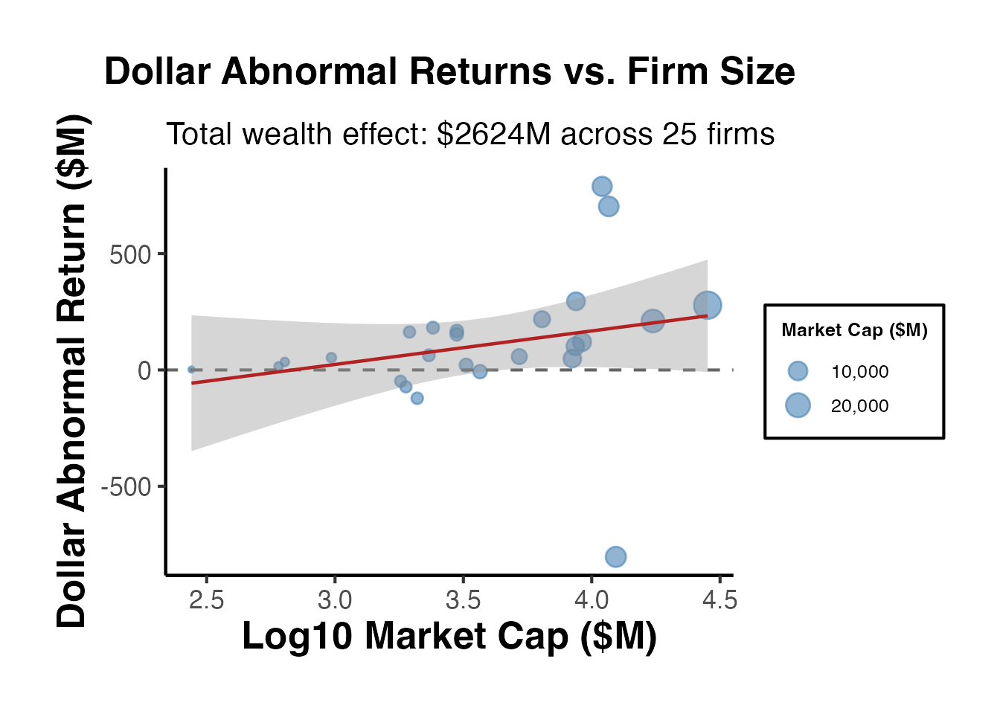
Dollar abnormal returns highlight an important asymmetry: a small percentage CAR for a mega-cap firm may represent a far larger absolute wealth effect than a large CAR for a small firm. Reporting both equal-weighted and market-cap-weighted CARs alongside total dollar wealth effects provides a more complete picture of the economic significance of an event.
The single most important practical issue in finance event studies is correctly identifying the event date. If the event date is off by even one day, the abnormal return may be attributed to the wrong date, leading to a failure to detect the true effect. Best practices include:
If multiple events affect the same firm within the event window, the abnormal return reflects the combined effect of all events. Strategies for dealing with overlapping events include:
Stocks that trade infrequently pose problems because observed returns on non-trading days are zero, biasing the market model parameters downward. Solutions include:
Events may increase return volatility, violating the assumption that the variance of abnormal returns is the same in the estimation and event windows. The BMP test (Boehmer, Musumeci, and Poulsen, 1991) addresses this by using cross-sectional variance rather than time-series variance. Alternatively:
When many events occur on the same calendar date (e.g., regulatory changes affecting an entire industry), the cross-sectional independence assumption underlying most test statistics is violated. Remedies include:
The estimation window should be long enough to estimate the market model precisely but not so long that structural breaks in the firm’s risk parameters contaminate the estimates:
For very short windows (intraday or single-day), market microstructure effects can matter:
As noted in the introduction, the term “event study” is used in two distinct research traditions. This section provides a detailed comparison.
Finance event studies, the subject of this vignette, have the following characteristics:
Econometric event studies, which are not covered in this vignette, have different characteristics:
| Situation | Recommended Approach |
|---|---|
| M&A announcement effect on stock price | Finance event study |
| Effect of minimum wage increase on employment | Econometric event study (DID) |
| Market reaction to earnings surprise | Finance event study |
| Effect of hospital closures on health outcomes | Econometric event study (DID) |
| Regulatory change impact on bank stock prices | Finance event study |
| Staggered policy rollout across states | Econometric event study (staggered DID) |
| IPO long-run performance | Finance event study (BHAR/CTAR) |
| Effect of school funding reform on test scores | Econometric event study (DID) |
The key distinction is whether the researcher is studying asset prices (finance event study) or real outcomes (econometric event study). When the outcome is a security return and the question is “Did this event convey new information to the market?”, the finance event study is the appropriate tool.
This section provides a self-contained workflow that ties together all the pieces.
# =========================================================
# Complete Finance Event Study Pipeline (Simulated Data)
# =========================================================
# Step 1: Define parameters
est_win <- c(1, 170) # Estimation window
evt_win <- c(-10, 10) # Event window for analysis
gap_days <- 10 # Gap
# Step 2: Estimate market model for each firm
est_subset <- sim_data %>%
filter(day >= est_win[1] & day <= est_win[2])
params <- est_subset %>%
group_by(firm_id) %>%
dplyr::summarise(
alpha_hat = coef(lm(ret ~ market_ret))[1],
beta_hat = coef(lm(ret ~ market_ret))[2],
sigma_hat = summary(lm(ret ~ market_ret))$sigma,
.groups = "drop"
)
# Step 3: Compute abnormal returns in event window
evt_subset <- sim_data %>%
filter(event_time >= evt_win[1] & event_time <= evt_win[2]) %>%
left_join(params, by = "firm_id") %>%
mutate(ar_pipeline = ret - alpha_hat - beta_hat * market_ret)
# Step 4: Aggregate
agg_ar <- evt_subset %>%
group_by(event_time) %>%
dplyr::summarise(
aar = mean(ar_pipeline),
se_aar = sd(ar_pipeline) / sqrt(n()),
.groups = "drop"
) %>%
arrange(event_time) %>%
mutate(caar = cumsum(aar))
# Step 5: Visualization
ggplot(agg_ar, aes(x = event_time)) +
geom_col(aes(y = aar), fill = "steelblue", alpha = 0.5, width = 0.6) +
geom_line(aes(y = caar), color = "darkred", linewidth = 1.2) +
geom_point(aes(y = caar), color = "darkred", size = 2) +
geom_hline(yintercept = 0, linetype = "dashed", color = "grey50") +
geom_vline(xintercept = 0, linetype = "dotted", color = "grey40") +
labs(
title = "Event Study Results: AAR (Bars) and CAAR (Line)",
x = "Event Time (Trading Days)",
y = "Return"
) +
causalverse::ama_theme()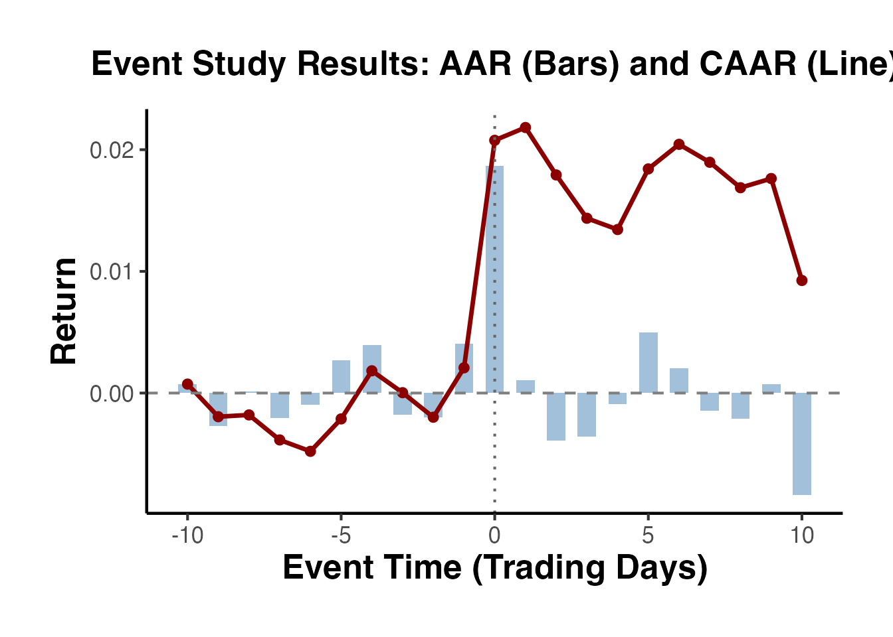
# Step 6: Statistical tests on CAR(-1, +1)
pipeline_car <- evt_subset %>%
filter(event_time >= -1 & event_time <= 1) %>%
group_by(firm_id) %>%
dplyr::summarise(car = sum(ar_pipeline), .groups = "drop")
cat("======================================\n")
#> ======================================
cat("EVENT STUDY RESULTS: CAR(-1, +1)\n")
#> EVENT STUDY RESULTS: CAR(-1, +1)
cat("======================================\n\n")
#> ======================================
n_obs <- nrow(pipeline_car)
mean_val <- mean(pipeline_car$car)
sd_val <- sd(pipeline_car$car)
t_val <- mean_val / (sd_val / sqrt(n_obs))
p_val <- 2 * (1 - pt(abs(t_val), df = n_obs - 1))
cat("N events: ", n_obs, "\n")
#> N events: 50
cat("Mean CAR: ", round(mean_val, 6), "\n")
#> Mean CAR: 0.02381
cat("Median CAR: ", round(median(pipeline_car$car), 6), "\n")
#> Median CAR: 0.023005
cat("Std. Dev: ", round(sd_val, 6), "\n")
#> Std. Dev: 0.040367
cat("t-statistic: ", round(t_val, 4), "\n")
#> t-statistic: 4.1708
cat("p-value: ", format.pval(p_val, digits = 4), "\n\n")
#> p-value: 0.0001234
# Sign test
n_pos <- sum(pipeline_car$car > 0)
cat("Positive CARs: ", n_pos, "/", n_obs, "\n")
#> Positive CARs: 35 / 50
cat("Sign test p: ",
format.pval(binom.test(n_pos, n_obs, 0.5)$p.value, digits = 4), "\n")
#> Sign test p: 0.0066A key contribution of finance event studies for top journals is quantifying the total economic value created or destroyed by an event—not just the percentage abnormal return. This section covers the full pipeline from individual CARs to aggregate industry wealth effects.
The dollar abnormal return (DAR) converts a percentage CAR into an absolute dollar amount, allowing comparisons across firms and events of different sizes:
where is the market capitalization on the last trading day before the event window opens. This timing is critical: using the market cap on the event date confounds the wealth effect with itself.
set.seed(2024)
# Simulate a sample of 50 firms in 3 industries affected by a policy announcement
n_firms <- 50
industries <- c("Banking", "Insurance", "FinTech")
firms_df <- data.frame(
firm_id = paste0("F", sprintf("%03d", 1:n_firms)),
industry = sample(industries, n_firms, replace = TRUE,
prob = c(0.4, 0.35, 0.25)),
mcap_pre = exp(rnorm(n_firms, log(10000), 1.5)), # Market cap in $M
stringsAsFactors = FALSE
)
# Simulate CARs: positively affected on average, with industry heterogeneity
firms_df$true_car <- ifelse(
firms_df$industry == "Banking", rnorm(n_firms, 0.025, 0.04),
ifelse(firms_df$industry == "Insurance", rnorm(n_firms, 0.015, 0.035),
rnorm(n_firms, 0.045, 0.055))
)
firms_df$CAR <- firms_df$true_car + rnorm(n_firms, 0, 0.015) # add noise
firms_df$DAR <- firms_df$CAR * firms_df$mcap_pre
# Summary
cat("=== Total Wealth Effects by Industry ===\n")
#> === Total Wealth Effects by Industry ===
industry_summary <- firms_df %>%
group_by(industry) %>%
dplyr::summarise(
n = n(),
mean_CAR = mean(CAR),
total_DAR = sum(DAR),
agg_mcap = sum(mcap_pre),
wt_CAR = sum(CAR * mcap_pre) / sum(mcap_pre),
.groups = "drop"
)
print(industry_summary)
#> # A tibble: 3 × 6
#> industry n mean_CAR total_DAR agg_mcap wt_CAR
#> <chr> <int> <dbl> <dbl> <dbl> <dbl>
#> 1 Banking 17 0.0303 17951. 391992. 0.0458
#> 2 FinTech 14 0.0663 5791. 410110. 0.0141
#> 3 Insurance 19 0.00724 4904. 450522. 0.0109
cat("\nAggregate total wealth effect: $",
round(sum(firms_df$DAR) / 1e3, 2), "B\n")
#>
#> Aggregate total wealth effect: $ 28.64 B
# Waterfall chart of wealth effects by industry
industry_summary$industry_f <- factor(
industry_summary$industry,
levels = industry_summary$industry[order(industry_summary$total_DAR)]
)
ggplot(industry_summary, aes(x = industry_f, y = total_DAR / 1000,
fill = ifelse(total_DAR > 0, "Positive", "Negative"))) +
geom_col(width = 0.5, alpha = 0.85) +
geom_text(aes(
label = paste0("$", round(total_DAR / 1000, 1), "B\n(",
round(wt_CAR * 100, 2), "% wtd CAR)"),
vjust = ifelse(total_DAR > 0, -0.3, 1.3)
), size = 3.5) +
scale_fill_manual(values = c("Positive" = "#2166AC", "Negative" = "#D73027"),
guide = "none") +
labs(
title = "Total Wealth Effect by Industry",
subtitle = paste0("Total: $",
round(sum(firms_df$DAR) / 1e3, 2),
"B across ", n_firms, " firms"),
x = "Industry",
y = "Total Dollar Abnormal Return ($B)"
) +
causalverse::ama_theme()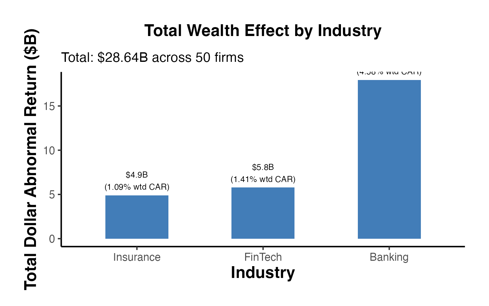
Top journals increasingly require reporting both equal-weighted (EW) and value-weighted (VW) CARs because they answer different questions:
A divergence between EW and VW CARs signals that the event disproportionately affects large or small firms.
ew_car <- mean(firms_df$CAR)
vw_car <- sum(firms_df$CAR * firms_df$mcap_pre) / sum(firms_df$mcap_pre)
# Median
median_car <- median(firms_df$CAR)
# Winsorized mean (remove top/bottom 1%)
q01 <- quantile(firms_df$CAR, 0.01)
q99 <- quantile(firms_df$CAR, 0.99)
wins_car <- mean(pmin(pmax(firms_df$CAR, q01), q99))
cat("Equal-weighted mean CAR: ", round(ew_car * 100, 3), "%\n")
#> Equal-weighted mean CAR: 3.161 %
cat("Value-weighted (mktcap) CAR: ", round(vw_car * 100, 3), "%\n")
#> Value-weighted (mktcap) CAR: 2.287 %
cat("Median CAR: ", round(median_car * 100, 3), "%\n")
#> Median CAR: 2.473 %
cat("Winsorized mean CAR (1%/99%): ", round(wins_car * 100, 3), "%\n")
#> Winsorized mean CAR (1%/99%): 3.205 %
cat("Total dollar wealth effect: $", round(sum(firms_df$DAR) / 1e3, 2), "B\n")
#> Total dollar wealth effect: $ 28.64 B
cat("Total market cap in sample: $", round(sum(firms_df$mcap_pre) / 1e3, 1), "B\n")
#> Total market cap in sample: $ 1252.6 BA complete economic analysis of a major event must assess not only the direct wealth effect on the event firm but also the spillover effects on industry rivals, customers, and suppliers. Three mechanisms drive rival returns:
# Simulate: focal firm announcements and their rivals
n_focal <- 15
n_rivals <- 35
rivals_df <- firms_df[firms_df$firm_id %in%
sample(firms_df$firm_id, n_rivals), ]
# Rivals experience a mix: some positive contagion, some negative competition
rivals_df$rival_CAR <- rnorm(n_rivals, mean = -0.008, sd = 0.03)
cat("=== Rival / Industry Spillover Effects ===\n")
#> === Rival / Industry Spillover Effects ===
cat("Mean rival CAR: ", round(mean(rivals_df$rival_CAR) * 100, 3), "%\n")
#> Mean rival CAR: -0.492 %
cat("Median rival CAR: ", round(median(rivals_df$rival_CAR) * 100, 3), "%\n")
#> Median rival CAR: -0.686 %
# t-test: is rival CAR different from zero?
tt <- t.test(rivals_df$rival_CAR)
cat("Rival t-stat: ", round(tt$statistic, 3), "\n")
#> Rival t-stat: -0.904
cat("Rival p-value: ", round(tt$p.value, 4), "\n")
#> Rival p-value: 0.3722
cat("Interpretation: ", ifelse(tt$p.value < 0.05,
"Significant spillover (information or competitive effect)",
"No significant spillover to rivals"), "\n")
#> Interpretation: No significant spillover to rivals
# Compare direct vs rival effects
cat("\n--- Combined Industry Wealth Effect ---\n")
#>
#> --- Combined Industry Wealth Effect ---
total_direct <- sum(firms_df$DAR)
total_rival <- sum(rivals_df$rival_CAR * rivals_df$mcap_pre)
cat("Direct wealth effect: $", round(total_direct / 1e3, 2), "B\n")
#> Direct wealth effect: $ 28.64 B
cat("Rival wealth effect: $", round(total_rival / 1e3, 2), "B\n")
#> Rival wealth effect: $ -14.15 B
cat("Net industry effect: $", round((total_direct + total_rival) / 1e3, 2), "B\n")
#> Net industry effect: $ 14.5 BAfter computing firm-level CARs, researchers typically run a cross-sectional OLS regression to identify the characteristics that explain variation in wealth effects. This is the second-stage of a two-step event study approach common in top finance journals.
# Add firm characteristics
firms_df$log_mcap <- log(firms_df$mcap_pre)
firms_df$leverage <- runif(n_firms, 0.1, 0.7) # Simulated leverage
firms_df$growth <- rnorm(n_firms, 0.1, 0.15) # Revenue growth rate
firms_df$beta <- rnorm(n_firms, 1, 0.4) # Market beta
firms_df$ind_bank <- as.integer(firms_df$industry == "Banking")
firms_df$ind_fintech <- as.integer(firms_df$industry == "FinTech")
# OLS cross-sectional regression
mod_cs <- lm(CAR ~ log_mcap + leverage + growth + beta +
ind_bank + ind_fintech,
data = firms_df)
summary(mod_cs)
#>
#> Call:
#> lm(formula = CAR ~ log_mcap + leverage + growth + beta + ind_bank +
#> ind_fintech, data = firms_df)
#>
#> Residuals:
#> Min 1Q Median 3Q Max
#> -0.136184 -0.021224 0.004532 0.029034 0.092488
#>
#> Coefficients:
#> Estimate Std. Error t value Pr(>|t|)
#> (Intercept) -0.007120 0.055832 -0.128 0.899121
#> log_mcap -0.001938 0.004792 -0.404 0.687912
#> leverage 0.032390 0.040524 0.799 0.428523
#> growth 0.039387 0.053683 0.734 0.467118
#> beta 0.013297 0.017640 0.754 0.455088
#> ind_bank 0.024834 0.016818 1.477 0.147056
#> ind_fintech 0.064134 0.018128 3.538 0.000982 ***
#> ---
#> Signif. codes: 0 '***' 0.001 '**' 0.01 '*' 0.05 '.' 0.1 ' ' 1
#>
#> Residual standard error: 0.04845 on 43 degrees of freedom
#> Multiple R-squared: 0.2457, Adjusted R-squared: 0.1404
#> F-statistic: 2.334 on 6 and 43 DF, p-value: 0.04869
# Visualize: CAR vs firm size (most common in the literature)
ggplot(firms_df, aes(x = log(mcap_pre), y = CAR * 100)) +
geom_point(aes(color = industry, size = mcap_pre), alpha = 0.7) +
geom_smooth(method = "lm", se = TRUE, color = "black",
linewidth = 0.8, linetype = "dashed") +
scale_color_manual(values = c("Banking" = "#2166AC",
"Insurance" = "#4DAF4A",
"FinTech" = "#D73027")) +
scale_size_continuous(
name = "Market Cap ($M)",
labels = scales::comma,
guide = "none"
) +
labs(
title = "CAR vs. Firm Size: Cross-Sectional Analysis",
subtitle = "Larger firms tend to experience smaller percentage CARs",
x = "Log Market Capitalization ($M)",
y = "CAR (%)",
color = "Industry"
) +
causalverse::ama_theme()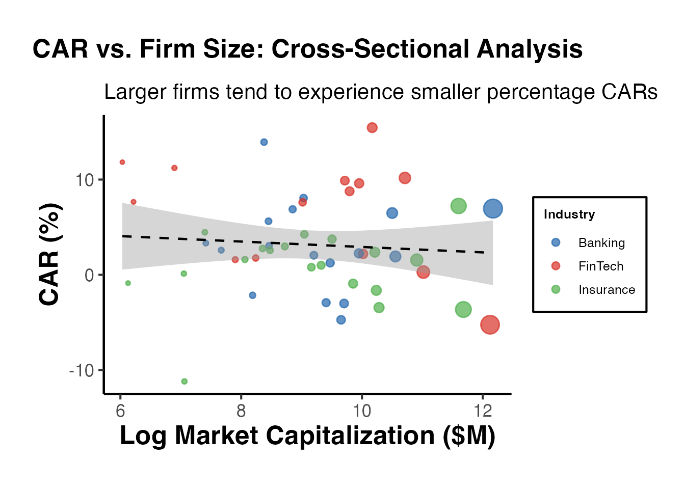
In mergers and acquisitions event studies, researchers must report the combined firm value (CFV) effect, which is the sum of acquirer and target dollar abnormal returns. This captures whether the deal creates or destroys value in total:
Even if the target earns large positive CARs, the deal may destroy aggregate value if the acquirer suffers large losses (the “winner’s curse”).
set.seed(7)
n_deals <- 30
# Simulate M&A event study
mna <- data.frame(
deal_id = 1:n_deals,
# Targets: almost always positive (acquisition premium)
target_CAR = rnorm(n_deals, 0.25, 0.12),
target_mcap = exp(rnorm(n_deals, log(500), 0.8)),
# Acquirers: often near zero or slightly negative
acquirer_CAR = rnorm(n_deals, -0.01, 0.04),
acquirer_mcap = exp(rnorm(n_deals, log(15000), 1.2)),
deal_type = sample(c("Cash", "Stock", "Mixed"), n_deals,
replace = TRUE)
)
mna$target_DAR <- mna$target_CAR * mna$target_mcap
mna$acquirer_DAR <- mna$acquirer_CAR * mna$acquirer_mcap
mna$CFV <- mna$target_DAR + mna$acquirer_DAR # Combined Firm Value
mna$relative_size <- mna$target_mcap / mna$acquirer_mcap
cat("=== M&A Wealth Effects ===\n\n")
#> === M&A Wealth Effects ===
cat("Target CARs: Mean =", round(mean(mna$target_CAR)*100, 2),
"%, Median =", round(median(mna$target_CAR)*100, 2), "%\n")
#> Target CARs: Mean = 29.75 %, Median = 29.09 %
cat("Acquirer CARs: Mean =", round(mean(mna$acquirer_CAR)*100, 2),
"%, Median =", round(median(mna$acquirer_CAR)*100, 2), "%\n")
#> Acquirer CARs: Mean = -1.03 %, Median = -0.93 %
cat("Combined Firm Value (total): $", round(sum(mna$CFV)/1e3, 2), "B\n")
#> Combined Firm Value (total): $ -7.97 B
cat("% Deals with positive CFV: ", round(mean(mna$CFV > 0)*100, 1), "%\n\n")
#> % Deals with positive CFV: 46.7 %
# By deal type
by_type <- aggregate(
cbind(target_CAR, acquirer_CAR, CFV) ~ deal_type, data = mna, FUN = mean
)
print(by_type)
#> deal_type target_CAR acquirer_CAR CFV
#> 1 Cash 0.3285798 -0.016245297 -596.2423
#> 2 Mixed 0.2667070 0.005194943 307.1286
#> 3 Stock 0.2730372 -0.012987082 -196.6294
# Scatter: acquirer vs target CAR with CFV color
ggplot(mna, aes(x = target_CAR * 100, y = acquirer_CAR * 100)) +
geom_hline(yintercept = 0, linetype = "dashed", color = "gray50") +
geom_vline(xintercept = 0, linetype = "dashed", color = "gray50") +
geom_point(aes(color = CFV > 0, size = acquirer_mcap), alpha = 0.7) +
scale_color_manual(
values = c("TRUE" = "#2166AC", "FALSE" = "#D73027"),
labels = c("TRUE" = "Value Creating", "FALSE" = "Value Destroying"),
name = "Combined Firm Value"
) +
scale_size_continuous(name = "Acquirer Mkt Cap ($M)", guide = "none") +
geom_abline(slope = -mna$target_mcap / mna$acquirer_mcap,
intercept = 0, alpha = 0) + # placeholder for iso-CFV lines
labs(
title = "M&A Wealth Effects: Target vs. Acquirer CARs",
subtitle = paste0("Combined firm value: $", round(sum(mna$CFV)/1e3, 2),
"B total | ", round(mean(mna$CFV>0)*100, 1),
"% of deals create value"),
x = "Target CAR (%)",
y = "Acquirer CAR (%)"
) +
causalverse::ama_theme()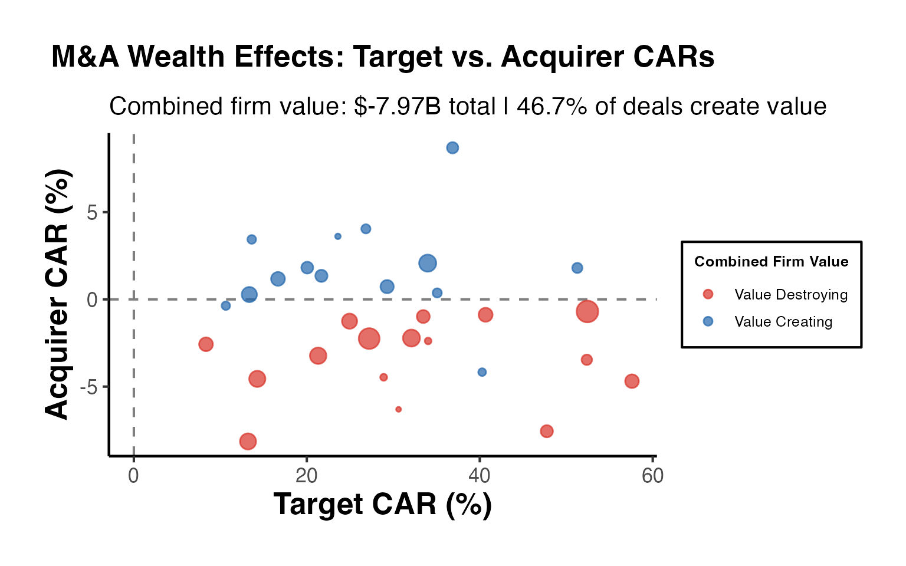
Standard t-tests assume normality. For robustness, especially with small samples or skewed returns, bootstrapped confidence intervals are preferred by many top journals.
set.seed(999)
# CAR data
car_vec <- firms_df$CAR
# Parametric (standard) 95% CI
n_f <- length(car_vec)
mean_car <- mean(car_vec)
se_car <- sd(car_vec) / sqrt(n_f)
z <- qnorm(0.975)
cat("=== Confidence Intervals for Mean CAR ===\n\n")
#> === Confidence Intervals for Mean CAR ===
cat("Parametric 95% CI: [", round((mean_car - z * se_car) * 100, 3), "%,",
round((mean_car + z * se_car) * 100, 3), "%]\n")
#> Parametric 95% CI: [ 1.713 %, 4.61 %]
# Bootstrap CI (percentile method)
B <- 5000
boot_means <- replicate(B, mean(sample(car_vec, n_f, replace = TRUE)))
boot_ci <- quantile(boot_means, c(0.025, 0.975))
cat("Bootstrap 95% CI: [", round(boot_ci[1] * 100, 3), "%,",
round(boot_ci[2] * 100, 3), "%]\n")
#> Bootstrap 95% CI: [ 1.736 %, 4.601 %]
# BCa (bias-corrected and accelerated) - more accurate
bias_correct <- qnorm(mean(boot_means < mean_car))
cat("Bootstrap mean: ", round(mean(boot_means) * 100, 4), "%\n")
#> Bootstrap mean: 3.1631 %
cat("Bootstrap bias: ", round((mean(boot_means) - mean_car) * 100, 5), "%\n")
#> Bootstrap bias: 0.00178 %When testing CARs for multiple event windows (e.g., [-1,+1], [-2,+2], [-5,+5], [-10,+10] simultaneously), Type I error inflates. Top journals require correction for multiple comparisons.
# Test multiple event windows simultaneously
windows <- list(
c(-1, 1),
c(-2, 2),
c(-3, 3),
c(-5, 5),
c(-10, 10)
)
window_results <- lapply(windows, function(w) {
# Simulate CARs for this window (in practice, compute from your AR series)
car_w <- rnorm(n_firms, mean = 0.02 * diff(w), sd = 0.04 * sqrt(diff(w)))
tt <- t.test(car_w)
data.frame(
window = paste0("[", w[1], ",", w[2], "]"),
mean_CAR = mean(car_w),
se = sd(car_w) / sqrt(n_firms),
t_stat = tt$statistic,
p_raw = tt$p.value
)
})
mult_df <- do.call(rbind, window_results)
# Corrections
mult_df$p_bonferroni <- p.adjust(mult_df$p_raw, method = "bonferroni")
mult_df$p_holm <- p.adjust(mult_df$p_raw, method = "holm")
mult_df$p_bh <- p.adjust(mult_df$p_raw, method = "BH") # Benjamini-Hochberg
print(mult_df[, c("window", "mean_CAR", "t_stat", "p_raw",
"p_bonferroni", "p_bh")], digits = 4)
#> window mean_CAR t_stat p_raw p_bonferroni p_bh
#> t [-1,1] 0.03340 3.928 2.679e-04 1.339e-03 2.679e-04
#> t1 [-2,2] 0.06732 5.913 3.187e-07 1.594e-06 3.984e-07
#> t2 [-3,3] 0.12362 8.976 6.392e-12 3.196e-11 1.065e-11
#> t3 [-5,5] 0.20128 11.873 5.002e-16 2.501e-15 1.251e-15
#> t4 [-10,10] 0.40563 12.896 2.283e-17 1.142e-16 1.142e-16Before collecting data, researchers should compute the minimum number of events needed to detect a given CAR with adequate power.
# Power for one-sample t-test (most common setup in event studies)
# H0: mean CAR = 0; H1: mean CAR = delta
power_event_study <- function(n, delta, sigma = 0.05, alpha = 0.05) {
# sigma = cross-sectional SD of individual firm CARs
se <- sigma / sqrt(n)
z_a <- qnorm(1 - alpha / 2)
z_b <- abs(delta) / se - z_a
pnorm(z_b)
}
mde_event_study <- function(n, sigma = 0.05, alpha = 0.05, power = 0.80) {
z_a <- qnorm(1 - alpha / 2)
z_b <- qnorm(power)
(z_a + z_b) * sigma / sqrt(n)
}
# MDE curve
ns_evt <- seq(10, 500, by = 5)
mdes <- vapply(ns_evt, mde_event_study, numeric(1), sigma = 0.04)
df_pwr <- data.frame(n = ns_evt, mde = mdes * 100)
ggplot(df_pwr, aes(x = n, y = mde)) +
geom_line(color = "#2166AC", linewidth = 1.2) +
geom_hline(yintercept = 1, linetype = "dashed", color = "red",
alpha = 0.7) +
geom_hline(yintercept = 2, linetype = "dashed", color = "orange",
alpha = 0.7) +
annotate("text", x = 450, y = 1.2, label = "1% CAR threshold",
color = "red", size = 3) +
annotate("text", x = 450, y = 2.2, label = "2% CAR threshold",
color = "orange", size = 3) +
labs(
title = "Minimum Detectable CAR vs. Number of Events",
subtitle = expression(paste("Cross-sectional SD = 4%, ", alpha,
" = 0.05, power = 80%")),
x = "Number of Events (N firms)",
y = "Minimum Detectable CAR (%)"
) +
scale_y_continuous(limits = c(0, NA)) +
causalverse::ama_theme()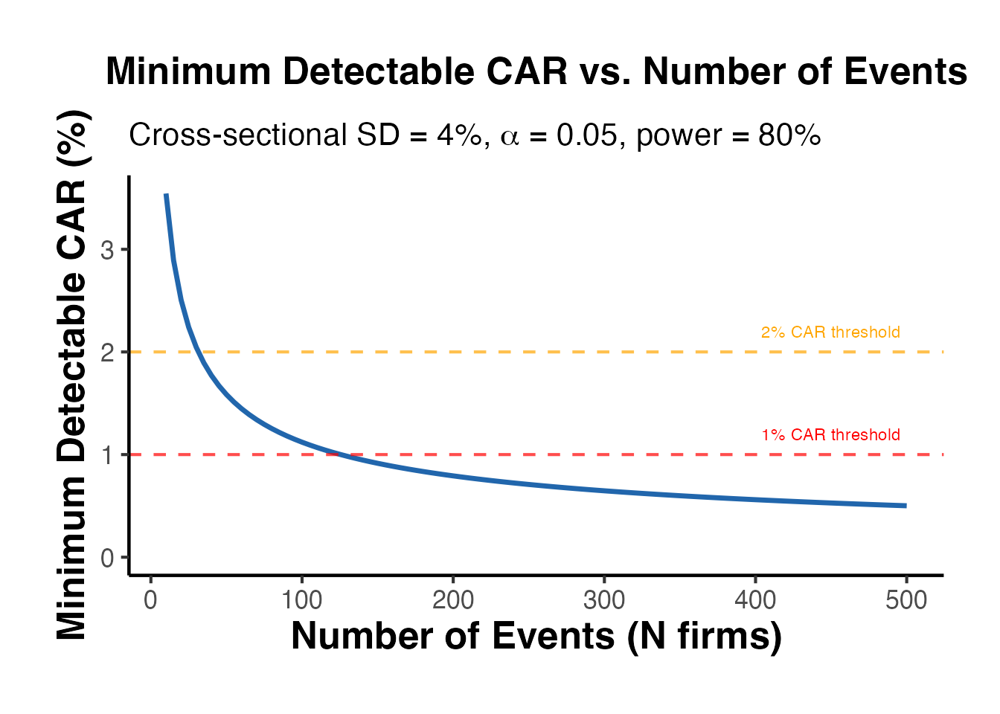
The following template produces a publication-ready table suitable for top finance journals (Journal of Finance, Journal of Financial Economics, Review of Financial Studies).
# Create a comprehensive CAR summary table
# (mirrors standard reporting in top journals)
compute_event_table <- function(car_vec, window_label) {
n_obs <- length(car_vec)
mean_v <- mean(car_vec)
sd_v <- sd(car_vec)
se_v <- sd_v / sqrt(n_obs)
t_val <- mean_v / se_v
p_val <- 2 * pt(-abs(t_val), df = n_obs - 1)
n_pos <- sum(car_vec > 0)
sgn_p <- binom.test(n_pos, n_obs, 0.5)$p.value
data.frame(
Window = window_label,
N = n_obs,
Mean_CAR = round(mean_v * 100, 3),
Median_CAR = round(median(car_vec) * 100, 3),
SD = round(sd_v * 100, 3),
t_stat = round(t_val, 3),
p_value = round(p_val, 4),
Pct_Pos = round(n_pos / n_obs * 100, 1),
Sign_p = round(sgn_p, 4),
Stars = ifelse(p_val < 0.01, "***",
ifelse(p_val < 0.05, "**",
ifelse(p_val < 0.10, "*", "")))
)
}
# Compute for multiple windows
car_1 <- firms_df$CAR # [-1,+1] proxy
car_3 <- firms_df$CAR + rnorm(n_firms, 0, 0.01) # [-3,+3]
car_5 <- firms_df$CAR + rnorm(n_firms, 0, 0.015) # [-5,+5]
car_10 <- firms_df$CAR + rnorm(n_firms, 0, 0.02) # [-10,+10]
pub_table <- do.call(rbind, list(
compute_event_table(car_1, "CAR[-1,+1]"),
compute_event_table(car_3, "CAR[-3,+3]"),
compute_event_table(car_5, "CAR[-5,+5]"),
compute_event_table(car_10, "CAR[-10,+10]")
))
# Display
print(pub_table, row.names = FALSE)
#> Window N Mean_CAR Median_CAR SD t_stat p_value Pct_Pos Sign_p Stars
#> CAR[-1,+1] 50 3.161 2.473 5.226 4.277 1e-04 78 0.0001 ***
#> CAR[-3,+3] 50 3.340 2.816 5.537 4.266 1e-04 74 0.0009 ***
#> CAR[-5,+5] 50 2.912 2.275 5.551 3.710 5e-04 68 0.0153 ***
#> CAR[-10,+10] 50 2.986 2.638 5.204 4.057 2e-04 68 0.0153 ***
cat("\n*** p<0.01, ** p<0.05, * p<0.10\n")
#>
#> *** p<0.01, ** p<0.05, * p<0.10
cat("Mean_CAR, Median_CAR, and SD are in percent (%)\n")
#> Mean_CAR, Median_CAR, and SD are in percent (%)
cat("Pct_Pos = percentage of positive CARs; Sign_p = sign test p-value\n")
#> Pct_Pos = percentage of positive CARs; Sign_p = sign test p-valueThis table format directly replicates what readers see in top finance journals. For the final paper, format with knitr::kable() or modelsummary::modelsummary().
Under the efficient markets hypothesis, the CAR over the event window is the market’s best estimate of the present value of all future incremental cash flows caused by the event. This is one of the most powerful features of the event study methodology: a two-day window CAR captures the full long-run economic impact in a single number.
This interpretation allows direct comparison with alternative policy cost estimates (regulatory compliance costs, litigation damages, contract values) without requiring long time-series of cash flow data.
Key implications:
set.seed(2024)
n_f <- 30
df_npv <- data.frame(
firm = paste0("F", 1:n_f),
CAR = rnorm(n_f, 0.025, 0.04), # 2.5% mean CAR
mcap_pre = exp(rnorm(n_f, log(8000), 1.3)), # market cap in $M
# Hypothetical annual EBITDA margin × revenue for comparison
ebitda = exp(rnorm(n_f, log(400), 0.9)) # $M per year
)
# Dollar abnormal return = capitalized PV of cash flow change
df_npv$DAR_mm <- df_npv$CAR * df_npv$mcap_pre
# Implied "event payback" in years of EBITDA
df_npv$ebitda_years <- df_npv$DAR_mm / df_npv$ebitda
cat("=== NPV Interpretation of CARs ===\n\n")
#> === NPV Interpretation of CARs ===
cat("Mean CAR: ", round(mean(df_npv$CAR)*100, 2), "%\n")
#> Mean CAR: 1.65 %
cat("Total capitalized value change: $", round(sum(df_npv$DAR_mm)/1e3, 2), "B\n")
#> Total capitalized value change: $ 2.05 B
cat("Implied EBITDA-years (median): ",
round(median(df_npv$ebitda_years), 1), " years of EBITDA\n\n")
#> Implied EBITDA-years (median): 0.2 years of EBITDA
cat("Interpretation: if median firm earns $",
round(median(df_npv$ebitda), 0), "M EBITDA/year,\n")
#> Interpretation: if median firm earns $ 473 M EBITDA/year,
cat("the event is worth ~", round(median(df_npv$ebitda_years), 1),
" years of operating profit in PV terms.\n")
#> the event is worth ~ 0.2 years of operating profit in PV terms.
# Scatter: market cap vs. dollar abnormal return (log scale)
ggplot(df_npv, aes(x = mcap_pre / 1e3, y = DAR_mm,
color = CAR > 0)) +
geom_hline(yintercept = 0, linetype = "dashed", color = "grey50") +
geom_point(size = 3, alpha = 0.75) +
geom_smooth(aes(group = 1), method = "lm", se = TRUE,
color = "grey30", linewidth = 0.8, linetype = "dotted") +
scale_color_manual(
values = c("TRUE" = "#2166AC", "FALSE" = "#D73027"),
labels = c("TRUE" = "Value created", "FALSE" = "Value destroyed"),
name = NULL
) +
scale_x_log10(labels = scales::comma) +
labs(
title = "Capitalized Value Change (NPV) vs. Firm Size",
subtitle = paste0("Total: $", round(sum(df_npv$DAR_mm)/1e3, 2),
"B across ", n_f, " firms"),
x = "Market Cap Pre-Event ($B, log scale)",
y = "Dollar Abnormal Return ($M)"
) +
causalverse::ama_theme()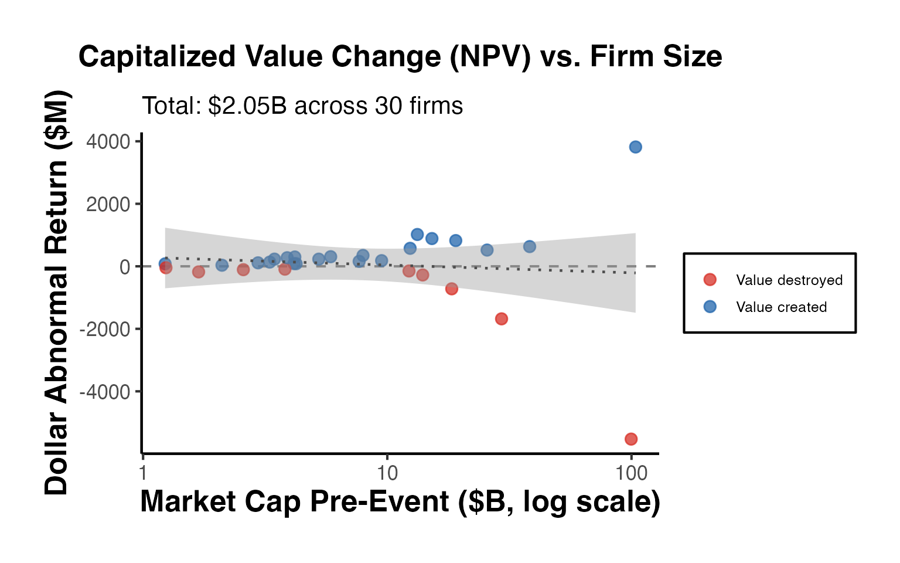
Raw dollar abnormal returns are dominated by large firms. Normalizing by firm characteristics reveals the per-unit impact and enables cross-firm comparison without firm-size confounds. Common normalizations used in top journals include:
| Metric | Formula | Interpretation |
|---|---|---|
| Per share | Dollar change per share held | |
| Per employee | Market’s valuation of event per worker | |
| Per $1 of assets | Asset-normalized value creation | |
| Per $1 of revenue | Revenue-normalized impact | |
| Tobin’s Q impact | Effect on Q ratio |
set.seed(42)
n_f2 <- 25
df_norm <- data.frame(
firm = paste0("F", 1:n_f2),
CAR = rnorm(n_f2, 0.02, 0.035),
mcap_pre = exp(rnorm(n_f2, log(6000), 1.1)), # $M
shares_out = exp(rnorm(n_f2, log(500), 0.7)), # millions of shares
employees = round(exp(rnorm(n_f2, log(5000), 0.8))),
total_assets = exp(rnorm(n_f2, log(10000), 1.2)), # $M
revenue = exp(rnorm(n_f2, log(4000), 1.0)) # $M
)
df_norm$DAR_mm <- df_norm$CAR * df_norm$mcap_pre
# Normalized metrics
df_norm$dar_per_share <- df_norm$DAR_mm * 1e6 / (df_norm$shares_out * 1e6)
# DAR in $ / shares in units = $/share
df_norm$dar_per_employee <- df_norm$DAR_mm * 1e6 / df_norm$employees
# $/employee
df_norm$dar_per_asset <- df_norm$DAR_mm / df_norm$total_assets
# $M / $M = fraction
df_norm$dar_per_revenue <- df_norm$DAR_mm / df_norm$revenue
# fraction
cat("=== Normalized Event Cost Metrics ===\n\n")
#> === Normalized Event Cost Metrics ===
cat(sprintf("Mean DAR per share: $%.2f\n",
mean(df_norm$dar_per_share)))
#> Mean DAR per share: $0.51
cat(sprintf("Mean DAR per employee: $%.0f\n",
mean(df_norm$dar_per_employee)))
#> Mean DAR per employee: $42423
cat(sprintf("Mean DAR / total assets: %.4f (= Tobin's Q impact)\n",
mean(df_norm$dar_per_asset)))
#> Mean DAR / total assets: 0.0224 (= Tobin's Q impact)
cat(sprintf("Mean DAR / revenue: %.4f\n",
mean(df_norm$dar_per_revenue)))
#> Mean DAR / revenue: 0.0726
cat("\nInterpretation:\n")
#>
#> Interpretation:
cat(sprintf(
" Each shareholder gained/lost ~$%.2f per share on average.\n",
mean(df_norm$dar_per_share)))
#> Each shareholder gained/lost ~$0.51 per share on average.
cat(sprintf(
" The market valued the event at ~$%.0f per employee.\n",
mean(df_norm$dar_per_employee)))
#> The market valued the event at ~$42423 per employee.
# Bar chart: distribution of per-employee cost
df_norm_sorted <- df_norm[order(df_norm$dar_per_employee), ]
df_norm_sorted$firm_f <- factor(df_norm_sorted$firm,
levels = df_norm_sorted$firm)
ggplot(df_norm_sorted,
aes(x = firm_f, y = dar_per_employee,
fill = dar_per_employee > 0)) +
geom_col(alpha = 0.85, width = 0.7) +
geom_hline(yintercept = 0, color = "grey40") +
scale_fill_manual(
values = c("TRUE" = "#2166AC", "FALSE" = "#D73027"),
guide = "none"
) +
labs(
title = "Event Value per Employee",
subtitle = "Dollar abnormal return divided by firm headcount",
x = NULL,
y = "DAR per Employee ($)"
) +
theme(axis.text.x = element_text(angle = 60, hjust = 1, size = 7)) +
causalverse::ama_theme()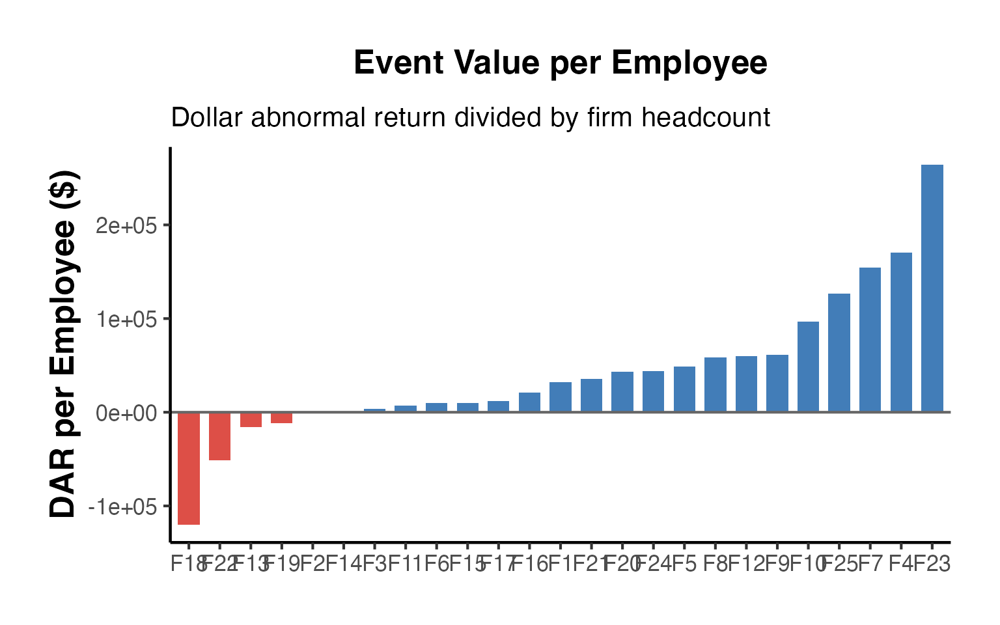
Event study samples typically cover a subset of all affected firms (e.g., only publicly listed companies, or only firms with complete CRSP data). To estimate the total social/industry cost of an event, researchers extrapolate from the sample to the full population using the sample value-weighted CAR and publicly available industry market-cap data.
Step 1: Compute the sample value-weighted (VW) CAR. Step 2: Obtain total market capitalization of all publicly listed firms in the affected industry from an external source (CRSP, Compustat, or industry reports). Step 3: Total industry wealth effect ≈ VW-CAR × Total industry market cap.
Important caveats: - This extrapolation assumes the sample is representative (no selection bias toward affected or large firms). - It applies only to publicly listed companies - private firm effects are excluded. - For concentrated industries (e.g., banking), this extrapolation is more reliable.
# Sample statistics
ew_car_sample <- mean(df_npv$CAR)
vw_car_sample <- sum(df_npv$CAR * df_npv$mcap_pre) / sum(df_npv$mcap_pre)
# Hypothetical: sample covers 30 of 120 public firms in the industry
# Total sector market cap = $2 trillion
total_sector_mcap <- 2e6 # $2,000,000 M = $2 trillion
# Extrapolated industry wealth effect
est_industry_cost <- vw_car_sample * total_sector_mcap
# 95% CI using bootstrap
set.seed(1234)
B_rep <- 5000
vw_boots <- replicate(B_rep, {
idx <- sample(nrow(df_npv), replace = TRUE)
b <- df_npv[idx, ]
sum(b$CAR * b$mcap_pre) / sum(b$mcap_pre)
})
ci_lo_ext <- quantile(vw_boots, 0.025) * total_sector_mcap
ci_hi_ext <- quantile(vw_boots, 0.975) * total_sector_mcap
cat("=== Population-Level Industry Wealth Effect Estimate ===\n\n")
#> === Population-Level Industry Wealth Effect Estimate ===
cat("Sample size (N firms): ", nrow(df_npv), "\n")
#> Sample size (N firms): 30
cat("Equal-weighted CAR: ", round(ew_car_sample*100, 3), "%\n")
#> Equal-weighted CAR: 1.645 %
cat("Value-weighted CAR: ", round(vw_car_sample*100, 3), "%\n")
#> Value-weighted CAR: 0.43 %
cat("Hypothetical total sector mcap: $2.0T\n")
#> Hypothetical total sector mcap: $2.0T
cat(sprintf("\nEstimated total industry cost: $%.1f B\n",
est_industry_cost / 1e3))
#>
#> Estimated total industry cost: $8.6 B
cat(sprintf("Bootstrap 95%% CI: [$%.1f B, $%.1f B]\n",
ci_lo_ext / 1e3, ci_hi_ext / 1e3))
#> Bootstrap 95% CI: [$-47.9 B, $62.4 B]
cat("\nNote: applies only to publicly listed firms in the sector.\n")
#>
#> Note: applies only to publicly listed firms in the sector.Event studies are a primary tool for regulatory cost-benefit analysis (CBA). The SEC, CFTC, and other agencies are required to quantify the economic impact of proposed rules, and event studies around rule announcements provide the most credible market-based cost estimates.
If markets anticipate the rule in advance (e.g., due to lobbying transparency or legislative committee votes), the announcement-window CAR underestimates the total cost. Researchers often use a sequence of announcements (bill introduction, committee passage, floor vote, Presidential signature) and cumulate CARs across all events.
set.seed(789)
# Simulate: 3 regulatory announcement events for a financial regulation
# Firms in affected sector (n = 40 public firms)
n_reg <- 40
reg_df <- data.frame(
firm_id = paste0("Bank_", sprintf("%02d", 1:n_reg)),
mcap_pre = exp(rnorm(n_reg, log(15000), 1.4)), # $M
type = sample(c("Large", "Regional", "Community"),
n_reg, replace = TRUE, prob = c(0.2, 0.4, 0.4))
)
# Three announcement events with decreasing CARs
# (market absorbs more info each time)
reg_df$CAR_event1 <- rnorm(n_reg, -0.018, 0.035) # bill introduced
reg_df$CAR_event2 <- rnorm(n_reg, -0.010, 0.025) # committee passage
reg_df$CAR_event3 <- rnorm(n_reg, -0.006, 0.020) # final rule adopted
# Cumulative CAR across all events
reg_df$CAR_cum <- reg_df$CAR_event1 +
reg_df$CAR_event2 +
reg_df$CAR_event3
reg_df$DAR_cum <- reg_df$CAR_cum * reg_df$mcap_pre
reg_df$DAR_e1 <- reg_df$CAR_event1 * reg_df$mcap_pre
# Summary by firm type
reg_summary <- reg_df %>%
group_by(type) %>%
dplyr::summarise(
n = n(),
mean_CAR = mean(CAR_cum) * 100,
total_DAR = sum(DAR_cum) / 1e3, # $B
.groups = "drop"
)
cat("=== Regulatory Cost Assessment ===\n\n")
#> === Regulatory Cost Assessment ===
cat("Rule: Hypothetical Bank Capital Requirements Regulation\n\n")
#> Rule: Hypothetical Bank Capital Requirements Regulation
cat(sprintf("Total regulatory cost (all 3 events): $%.2f B\n",
sum(reg_df$DAR_cum) / 1e3))
#> Total regulatory cost (all 3 events): $-19.63 B
cat(sprintf(" Event 1 (bill introduced): $%.2f B\n",
sum(reg_df$DAR_e1) / 1e3))
#> Event 1 (bill introduced): $-10.93 B
cat(sprintf(" Event 2+3 (passage & adoption): $%.2f B\n",
sum(reg_df$DAR_cum - reg_df$DAR_e1) / 1e3))
#> Event 2+3 (passage & adoption): $-8.70 B
cat("\nBy firm type:\n")
#>
#> By firm type:
print(reg_summary, digits = 3)
#> # A tibble: 3 × 4
#> type n mean_CAR total_DAR
#> <chr> <int> <dbl> <dbl>
#> 1 Community 16 -2.87 -6.74
#> 2 Large 10 -2.69 -4.37
#> 3 Regional 14 -4.98 -8.53
cat("\nNote: negative DAR = cost to shareholders; regulators compare\n")
#>
#> Note: negative DAR = cost to shareholders; regulators compare
cat("this against projected benefits (reduced systemic risk, etc.).\n")
#> this against projected benefits (reduced systemic risk, etc.).
# Visualize: cumulative regulatory cost across events by firm type
plot_df <- reg_df %>%
mutate(
event1_DAR = DAR_e1 / 1e3,
event2_3_DAR = (DAR_cum - DAR_e1) / 1e3
) %>%
pivot_longer(
cols = c(event1_DAR, event2_3_DAR),
names_to = "event_phase",
values_to = "DAR_B"
) %>%
mutate(event_phase = ifelse(
event_phase == "event1_DAR",
"Event 1: Bill Introduced",
"Events 2-3: Passage & Adoption"
))
ggplot(plot_df, aes(x = type, y = DAR_B, fill = event_phase)) +
geom_col(position = "stack", alpha = 0.85, width = 0.6) +
geom_hline(yintercept = 0, color = "grey40") +
scale_fill_manual(
values = c("Event 1: Bill Introduced" = "#D73027",
"Events 2-3: Passage & Adoption" = "#FC8D59"),
name = "Announcement Phase"
) +
labs(
title = "Regulatory Cost by Firm Type and Announcement Phase",
subtitle = paste0("Total shareholder cost: $",
round(sum(reg_df$DAR_cum)/1e3, 2),
"B across ", n_reg, " firms"),
x = "Firm Type",
y = "Total Dollar Abnormal Return ($B)"
) +
causalverse::ama_theme() +
theme(legend.position = "bottom")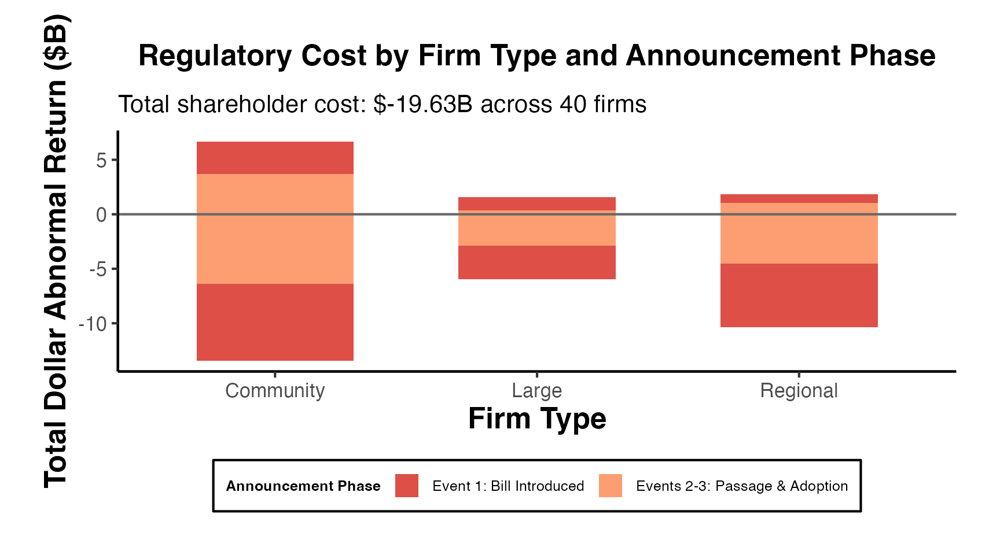
Interpretation guide for regulatory cost analysis:
| Metric | Meaning |
|---|---|
| Total DAR | Market’s estimate of NPV of compliance costs + lost profits |
| EW-CAR | Average effect per regulated firm |
| VW-CAR | Total economic significance (large banks dominate) |
| CAR by firm type | Distributional incidence – who bears the cost? |
| Cumulative CAR across events | Total expected cost as information revealed gradually |
This approach is used in academic work including Bhagat and Romano (2002), who used event studies to estimate the cost of securities litigation, and in SEC regulatory impact analyses. The key advantage over survey-based compliance cost estimates is that the market-based measure is forward-looking and incentive-compatible – firms have no reason to over- or under-report their expected costs.
While most event studies use daily closing returns, intraday event studies use tick-by-tick or minute-by-minute data to capture the speed of price discovery. This is increasingly common for:
Key advantages: (1) capture pre-announcement leakage, (2) distinguish opening-auction effects from intraday adjustment, (3) examine bid-ask spread changes alongside returns.
Key challenges: (1) intraday seasonality (U-shaped volume patterns), (2) bid-ask bounce, (3) stale quotes for illiquid stocks.
Events often increase return variance around the announcement window. Tests that ignore event-induced variance (like the simple t-test) are over-sized. The BMP test (Section 6.3) and the Kolari-Pynnonen adjusted test (Section 13.1) specifically address this.
A diagnostic:
# Simulate: higher variance in event window vs. estimation window
set.seed(123)
n_days <- 40
n_firms_v <- 20
# Estimation window returns
pre_returns <- matrix(rnorm(n_firms_v * 170, 0, 0.015),
nrow = n_firms_v, ncol = 170)
# Event window returns (higher variance)
evt_returns <- matrix(rnorm(n_firms_v * n_days, 0.001, 0.04),
nrow = n_firms_v, ncol = n_days)
# Compare variance
var_pre <- mean(apply(pre_returns, 2, var))
var_evt <- mean(apply(evt_returns, 2, var))
cat("Average daily variance (estimation window): ", round(var_pre, 6), "\n")
#> Average daily variance (estimation window): 0.000222
cat("Average daily variance (event window): ", round(var_evt, 6), "\n")
#> Average daily variance (event window): 0.001577
cat("Variance ratio (event/estimation): ",
round(var_evt / var_pre, 2), "x\n")
#> Variance ratio (event/estimation): 7.11 x
# Visualize variance by day
df_var <- data.frame(
day = c(seq(-170, -1), seq(1, n_days)),
variance = c(apply(pre_returns, 2, var),
apply(evt_returns, 2, var)),
period = c(rep("Estimation", 170), rep("Event", n_days))
)
ggplot(df_var, aes(x = day, y = variance * 10000, color = period)) +
geom_line(alpha = 0.6) +
geom_smooth(method = "loess", se = FALSE, linewidth = 1) +
geom_vline(xintercept = 0, linetype = "dashed", color = "gray30") +
scale_color_manual(values = c("Estimation" = "#4393C3",
"Event" = "#D73027")) +
labs(
title = "Event-Induced Variance: Estimation vs. Event Window",
x = "Trading Day Relative to Event",
y = "Cross-Sectional Return Variance (×10,000)",
color = "Period"
) +
causalverse::ama_theme()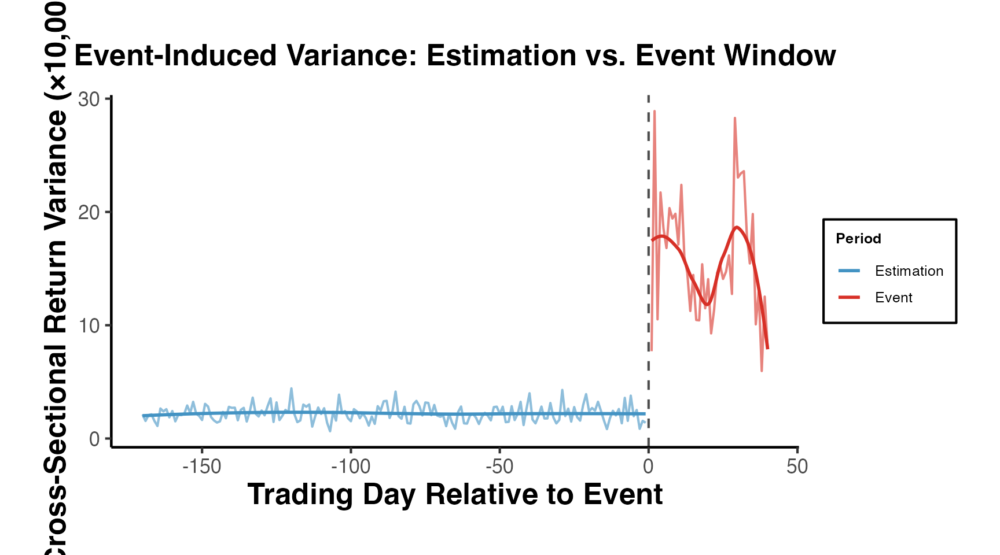
Detecting pre-announcement drift (returns accumulating before the official event date) is important for assessing information leakage and insider trading. A simple cumulation of pre-event abnormal returns tests for this.
set.seed(55)
# Simulate: pre-announcement drift for ~30% of observations (information leakage)
n_firms_d <- 40
leakage <- rbinom(n_firms_d, 1, 0.3) # 30% have leakage
# Full CAR time series: days -20 to +5
days_range <- -20:5
car_matrix <- matrix(0, nrow = n_firms_d, ncol = length(days_range))
for (i in seq_len(n_firms_d)) {
true_drift <- if (leakage[i] == 1) {
# Drift: starts accumulating 10 days before event
c(rep(0, 10), cumsum(rnorm(10, 0.003, 0.005)),
rnorm(6, 0.001, 0.010))
} else {
cumsum(rnorm(length(days_range), 0, 0.008))
}
car_matrix[i, ] <- true_drift
}
# Average across firms
caar_drift <- data.frame(
day = days_range,
caar = colMeans(car_matrix),
se = apply(car_matrix, 2, sd) / sqrt(n_firms_d)
)
caar_drift$ci_lo <- caar_drift$caar - 1.96 * caar_drift$se
caar_drift$ci_hi <- caar_drift$caar + 1.96 * caar_drift$se
ggplot(caar_drift, aes(x = day, y = caar * 100)) +
geom_ribbon(aes(ymin = ci_lo * 100, ymax = ci_hi * 100),
fill = "#4393C3", alpha = 0.25) +
geom_line(color = "#2166AC", linewidth = 1.2) +
geom_vline(xintercept = 0, linetype = "dashed", color = "gray30") +
geom_hline(yintercept = 0, color = "gray60") +
annotate("text", x = -8, y = max(caar_drift$caar * 100) * 0.5,
label = "Pre-announcement\ndrift", color = "firebrick",
size = 3.5) +
labs(
title = "CAAR with Pre-Announcement Drift Detection",
subtitle = "Upward drift before day 0 may indicate information leakage",
x = "Trading Day Relative to Event",
y = "CAAR (%)"
) +
causalverse::ama_theme()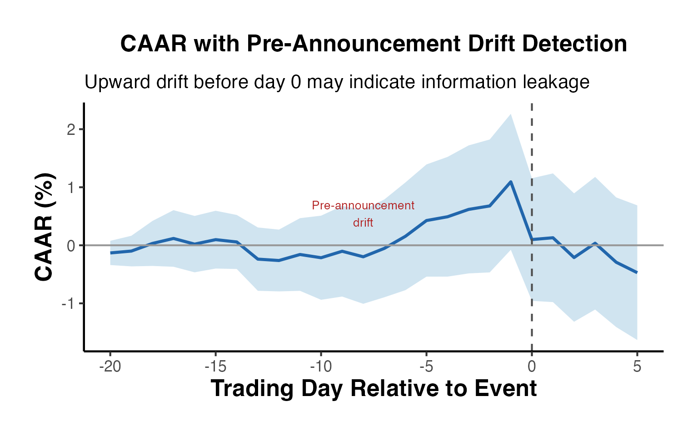
Ball, R., & Brown, P. (1968). An empirical evaluation of accounting income numbers. Journal of Accounting Research, 6(2), 159-178.
Bhagat, S., & Romano, R. (2002). Event studies and the law: Part II: Empirical studies of corporate law. American Law and Economics Review, 4(2), 380-423.
Boehmer, E., Musumeci, J., & Poulsen, A. B. (1991). Event-study methodology under conditions of event-induced variance. Journal of Financial Economics, 30(2), 253-272.
Brown, S. J., & Warner, J. B. (1980). Measuring security price performance. Journal of Financial Economics, 8(3), 205-258.
Brown, S. J., & Warner, J. B. (1985). Using daily stock returns: The case of event studies. Journal of Financial Economics, 14(1), 3-31.
Campbell, J. Y., Lo, A. W., & MacKinlay, A. C. (1997). The Econometrics of Financial Markets. Princeton University Press.
Carhart, M. M. (1997). On persistence in mutual fund performance. Journal of Finance, 52(1), 57-82.
Corrado, C. J. (1989). A nonparametric test for abnormal security-price performance in event studies. Journal of Financial Economics, 23(2), 385-395.
Dimson, E. (1979). Risk measurement when shares are subject to infrequent trading. Journal of Financial Economics, 7(2), 197-226.
Fama, E. F. (1998). Market efficiency, long-term returns, and behavioral finance. Journal of Financial Economics, 49(3), 283-306.
Fama, E. F., & French, K. R. (1993). Common risk factors in the returns on stocks and bonds. Journal of Financial Economics, 33(1), 3-56.
Fama, E. F., Fisher, L., Jensen, M. C., & Roll, R. (1969). The adjustment of stock prices to new information. International Economic Review, 10(1), 1-21.
Kolari, J. W., & Pynnonen, S. (2010). Event study testing with cross-sectional correlation of abnormal returns. Review of Financial Studies, 23(11), 3996-4025.
Kothari, S. P., & Warner, J. B. (2007). Econometrics of event studies. In B. E. Eckbo (Ed.), Handbook of Empirical Corporate Finance (Vol. 1, pp. 3-36). Elsevier.
MacKinlay, A. C. (1997). Event studies in economics and finance. Journal of Economic Literature, 35(1), 13-39.
Mitchell, M. L., & Stafford, E. (2000). Managerial decisions and long-term stock price performance. Journal of Business, 73(3), 287-329.
Patell, J. M. (1976). Corporate forecasts of earnings per share and stock price behavior: Empirical tests. Journal of Accounting Research, 14(2), 246-276.
Scholes, M., & Williams, J. (1977). Estimating betas from nonsynchronous data. Journal of Financial Economics, 5(3), 309-327.